# R'da nasıl yapılır
# A ve B kümelerini string vektör olarak tanımlayalım:
A <- c("Elma", "Armut", "Kiwi")
A[1] "Elma" "Armut" "Kiwi" B <- c("Elma", "Portakal", "Erik", "Kiwi")
B[1] "Elma" "Portakal" "Erik" "Kiwi" \[ \renewcommand{\E}{\mathbb{E}} \renewcommand{\P}{\mathbb{P}} \renewcommand{\Var}{\mbox{Var}} \renewcommand{\Cov}{\mbox{Cov}} \renewcommand{\plim}{\operatornamewithlimits{plim}} \renewcommand{\cd}{\overset{d}{\longrightarrow}} \renewcommand{\cp}{\overset{p}{\longrightarrow}} \renewcommand{\adistr}{\stackrel{a}{\sim}} \renewcommand{\ind}{1\hspace{-2.5mm}{1}} \]
Olasılık, hayatımızın her alanında karşılaştığımız belirsizlikleri anlamamıza ve yönetmemize yardımcı olan temel bir kavramdır. Günlük yaşamda aldığımız pek çok karar olayların gerçekleşme olasılığına dayanır. Ekonominin resesyona girme riski, bir futbol takımının maçı kazanma olasılığı, bir yatırımın başarılı olma şansı ya da bir uçağın zamanında kalkış yapma ihtimali gibi durumlar, olasılık teorisinin bize sunduğu araçlarla açıklanabilir. Olasılık, bu tür belirsizlikleri matematiksel bir çerçevede sistematik olarak değerlendirir ve öngörülerde bulunmamıza olanak tanır.
Bu bölümde, olasılığın temel kavramlarını inceleyeceğiz. İlk olarak, olasılığın dayandığı temel yapı taşlarından biri olan küme teorisini ve kümelerle ilgili işlemleri ele alacağız. Daha sonra, olasılığın nesnel ve öznel tanımlarını yaparak olaylar üzerindeki olasılık hesaplarını ve olasılık kurallarını öğreneceğiz.
Olasılık, izleyen bölümlerde inceleyeceğimiz dağılım teorisinin de temelini oluşturur. Normal, binom ve Poisson gibi olasılık dağılımları, olayların nasıl ve ne sıklıkta gerçekleşeceğini anlamamıza olanak tanır. Bunun yanı sıra, olasılık teorisi, istatistiksel çıkarsama tekniklerinin dayandığı teorik çerçeveyi sağlar. Örneğin, güven aralıkları oluşturma, hipotez test etme ve tahmin yapma gibi süreçlerin arkasında olasılık kuramı yatar.
Bir küme birbirinden farklı nesnelerden oluşan bir topluluktur. Genellikle büyük harflerle gösterilir. Örneğin aşağıda tanımlı \(A\) ve \(B\) kümelerini düşünelim: \[ A = \{a,b,c,d,e\} \] \[ B = \{d,e,f,g,h\} \] \(A\) ve \(B\) kümeleri 5 nesneden oluşmaktadır. Bir nesne kümenin elemanıysa \(\in\) ile gösterilir, örneğin \(a\in A\) yazabiliriz. Tersi durumda \(\notin\) notasyonunu kullanabiliriz, örneğin \(a\notin B\).
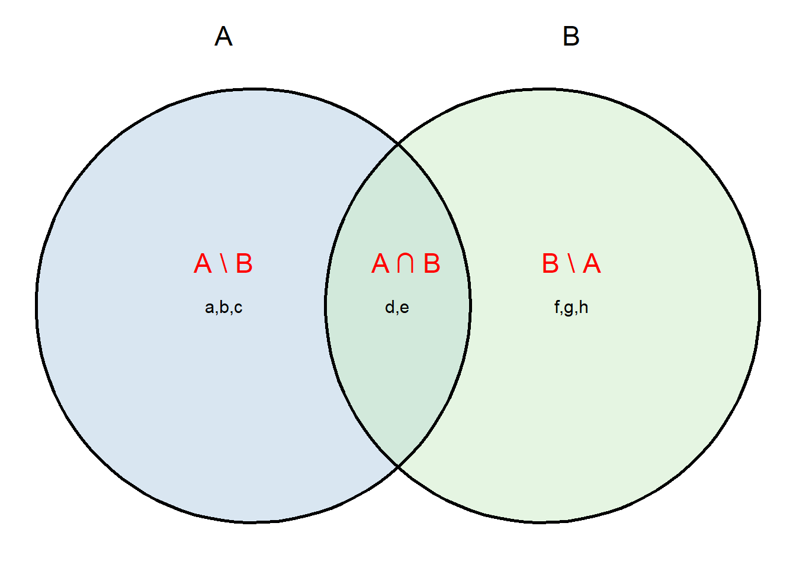
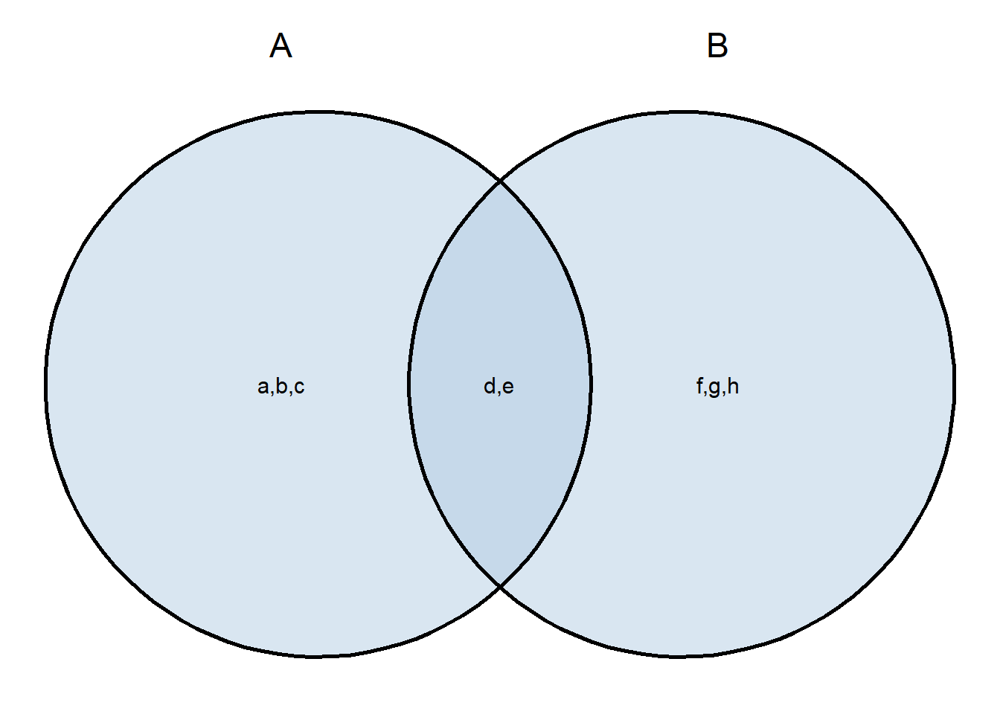
Kümelerin birleşimi \(A\)’da ya da \(B\) de (ya da her ikisinde) yer alan nesneleri içerir: \[ A\cup B=\{x\,\mid\, x \in A \text{ ya da } x \in B\} \] Kümelerin birleşimini endeks kümesi \(I\) olan bir küme dizisi için de tanımlayabiliriz: \[ \bigcup_{i \in I} A_i=\{a\,\mid\,a \in A_i \text{ her } i \in I\} \]
Örnek 4.1 Yukarıda tanımladığımız \(A\) ve \(B\) kümelerinin birleşimi: \[ A\cup B = \{a,b,c,d,e,f,g,h\} \]
Kümelerin kesişimi ise hem \(A\) hem de \(B\)’de yer alan nesnelerden oluşur. \[ A\cap B=\{x\,\mid\, x \in A \text{ ve } x \in B\} \]
Örnek 4.2 \(A\) ve \(B\) kümelerinin kesişim kümesi: \[ A\cap B = \{d,e\} \] olur (bkz. Şekil 4.1).
Küme farkı bir kümenin diğer kümeden farklı olan elemanlarının oluşturduğu yeni küme olarak tanımlanır ve \(A \setminus B\) ya da \(A - B\) ile gösterilir.
Örnek 4.3 A ve B kümelerinin farkı
\[
A \setminus B = \{a, b, c\}
\] \[
B \setminus A = \{f, g, h\}
\]
Küme eşitliği iki kümenin tam olarak aynı elemanlardan oluşması durumudur ve \(A=B\) ile gösterilir.
Örnek 4.4 \[ A = \{a,b,c,d,e\}, \quad B = \{d,e,f,g,h\} \quad \Rightarrow \quad A \neq B. \] Her iki küme aynı elemanlardan oluşmadığı için \(A\) ve \(B\) kümeleri eşit değildir.
Bir kümenin tümleyeni o kümede yer almayan sonuçlardan oluşan kümedir ve \(A^c\) ya da \(\bar{A}\) ile gösterilir.
Örnek 4.5 \[ A = \{a,b,c,d,e\}, \quad B = \{d,e,f,g,h\} \] tanımlı olsun. \(A\)’nın tümleyeni \[ A^c = (A\cup B) \setminus A = \{a,b,c,d,e,f,g\} \setminus \{a,b,c,d,e\} = \{f,g\} \] ve \(B\)’nin tümleyeni \[ B^c = (A\cup B) \setminus B = \{a,b,c,d,e,f,g\} \setminus \{d,e,f,g\} = \{a,b,c\} \] olur.
Örnek 4.6 (R ile küme işlemleri) R programını kullanarak birleşim (union), kesişim (intersect), küme farkı (setdiff) ve küme eşitliği (setequal) gibi işlemleri yapabiliriz.
# R'da nasıl yapılır
# A ve B kümelerini string vektör olarak tanımlayalım:
A <- c("Elma", "Armut", "Kiwi")
A[1] "Elma" "Armut" "Kiwi" B <- c("Elma", "Portakal", "Erik", "Kiwi")
B[1] "Elma" "Portakal" "Erik" "Kiwi" # A ve B kümelerinin birleşimi
union(A, B)[1] "Elma" "Armut" "Kiwi" "Portakal" "Erik" # A ve B kümelerinin kesişimi
intersect(A, B)[1] "Elma" "Kiwi"# A\B, A fark B = A'da olup B'de olmayan nesneler
setdiff(A, B)[1] "Armut"# B\A, B fark A = B'de olup A'da olmayan nesneler
setdiff(B, A)[1] "Portakal" "Erik" # kümeler eşit mi
setequal(A, B) [1] FALSEBir küme gözlem veya ölçümlerden oluşabilir. Bu gözlemleri üreten sürece deney ve deneyin eğer mümkünse tekrarlanmasına ise deneme ya da tekrar adı verilir. Olanaklı tüm sonuçlardan oluşan kümeye örneklem uzayı ya da evrensel küme adı verilir ve \(S\) ile gösterilir. Örneğin hilesiz bir para atılırsa bu ya yazı (Y) ya da tura (T) ile sonuçlanır. Öyleyse örneklem uzayı \[ S = \{T,Y\} \] olur. \(T\) ya da \(Y\) ile sonuçlanacak bu deneyin özellikleri kesin olarak bilinir. Aslında bu sonuçları üreten deneyi bir “model” olarak düşünebiliriz. Eğer bu modelde paranın hilesiz olduğu biliniyorsa bu sonuçlara belirli olasılıklar atayabiliriz. Bu varsayım altında bu modelde \(T\) gelme olasılığı %50’dir diyebiliriz. Aslında olasılık atamak için paranın hilesiz olması bir şart değildir. Olasılıklar kişiden kişiye değişen (sübjektif/öznel) bir niteliğe sahip olabilir. Bu konuya daha sonra değineceğiz.
\(A\) ve \(B\) olaylarının kesişim kümesi boş kümeyse \[ A\cap B = \emptyset \] bu olaylara karşılıklı bağdaşmaz ya da ayrık olaylar denir. Para atma deneyinde \(A=\{T\}\) ve \(B=\{Y\}\) olayları ayrık olaylardır. Her iki olay da örneklem uzayının bir alt kümesidir ve \(A\subset S\) ile gösterilir. Kesişimleri ise boş kümedir, yani hiç bir elemanı yoktur.
Tura gelme olasılığının %50 olduğunu nereden biliyoruz? Sadece iki olası sonuç olduğu için mi? Şimdi başka bir deney tanımlayalım. Bu deneyde pay senedi piyasasının günlük hareketlerini gözlemliyoruz. Örneğin İstanbul Borsası’nda BIST100 endeksinin günlük kapanış değerlerini takip ettiğimizi düşünelim. Kapanış değerinin önceki kapanışa göre ya artar ya da azalır (endeksin aynı kalması durumunu göz ardı edelim). Örneklem uzayını \[ S=\{+,~-\} \] ile gösterebiliriz. Burada \(+\) yukarı yönlü hareketi, \(-\) ise aşağı yönlü hareketi göstermektedir. Burada başka semboller ya da sayılar da kullanılabilir, örneğin \(S=\{1,~0\}\). Endeksin önceki güne göre artma olasılığı kaçtır? Yazı-Tura deneyinde olduğu gibi kolayca %50-%50 olasılıklarını atayabilir miyiz? Bu konuya izleyen alt bölümlerde tekrar değineceğiz.
Örnek 4.7 İki madeni para atılıyor ve sonuçlar kaydediliyor. Örneklem uzayını oluşturunuz. \(A\) “en az bir Yazı gelmesi” kümesinde kaç eleman vardır?
Çözüm:
İki madeni para atıldığında ortaya çıkabilecek tüm sonuçların kümesi \[ S = \{TT, TY, YT, YY\} \] olarak yazılabilir. En az bir Yazı gelmesi şeklinde tanımlanan \(A\) olayı \[ A = \{TY, YT, YY\} \] üç temel sonuçtan oluşur. Bu olaylardan herhangi biri gerçekleşirse A olayı gerçekleşmiş olur.
Örnek 4.8 İki zar atılıyor ve sonuçlar kaydediliyor. \(A\) olayı toplamın 4 olması \(B\) olayı ise toplamın 5’ten küçük olması şeklinde tanımlanıyor. Bu kümeleri oluşturunuz. \(A\cap B\) kaç eleman içerir?
Çözüm:
Bir zar atıldığında olanaklı sonuçlardan oluşan küme \[
Z_1=\{1,2,3,4,5,6\}
\] ve benzer şekilde ikinci zar için \[
Z_2=\{1,2,3,4,5,6\}
\] İki zar atıldığında ortaya çıkabilecek sonuçlar \(Z_{1i},Z_{2j}\), \(i,j=1,\ldots,6\) olacaktır. Öyleyse örneklem uzayının temel sonuçları, birinci zar ve ikinci zarın sonuçları \((Z_1,Z_2)\) olmak üzere aşağıdaki gibi yazılabilir:
\[
S = \{(1,1),~(1,2),~(1,3),~(1,4),\ldots,(6,4),~(6,5),~(6,6)\}
\] Bu örneklem uzayı 36 temel sonuçtan oluşmaktadır (bkz Şekil 4.2).
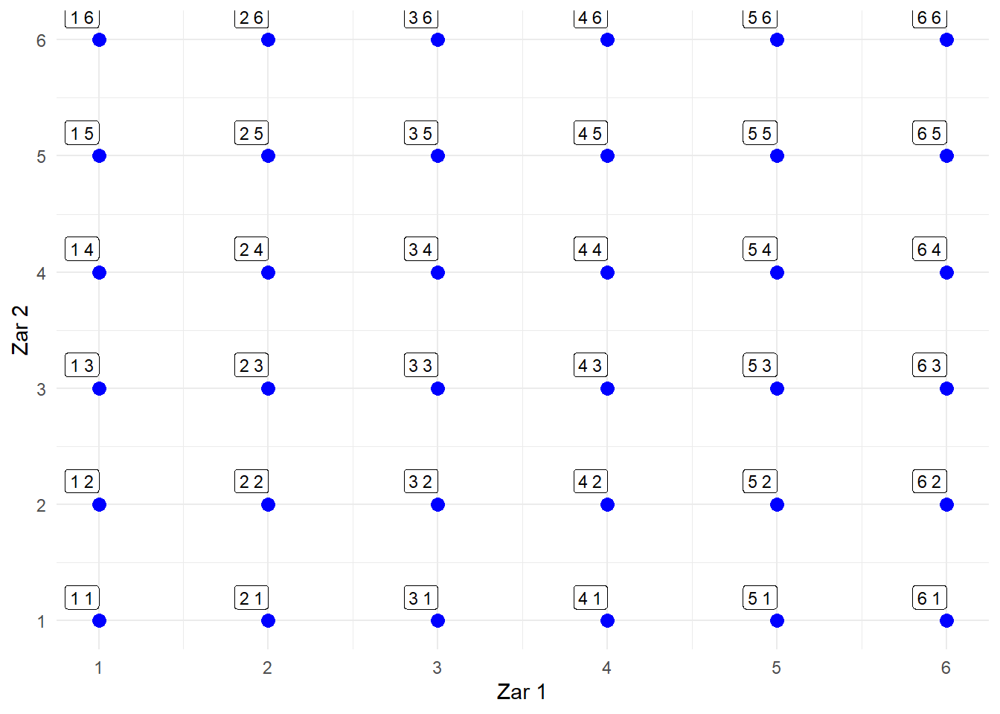
\(A\) olayı zarların toplamının 4 olması: \[ A=\{(1,3),~(3,1),~(2,2)\} \] \(B\) ise toplamın beşten küçük olması: \[ B = \{(1,1),~(1,2),~(2,1),~(1,3),~(3,1),~(2,2)\} \] olarak tanımlanmıştı. Bu olayların kesişimi \[ A\cap B = \{(1,3),~(3,1),~(2,2)\} \] üç eleman içermektedir.
Örnek 4.9 Örneklem uzayı \(S\) tüm pozitif tamsayılardan oluşsun (sayma sayıları). \(A\subset S\) kümesi çift tamsayılardan oluşsun. \(A\)’nın tümleyenini, \(A^c\), bulunuz.
Örneklem uzayı \[ S=\{1,2,3,4,\ldots\} \] \[ A = \{2,4,6,\ldots\} \] \(A\) kümesinin tümleyeni \[ A^c=\{1,3,5,\ldots\} \] olur. Birleşimleri örneklem uzayını verir: \[ A\cup A^c = S \] Kesişimleri ise boş kümedir: \[ A\cap A^c = \emptyset \]
Günlük hayatımızda olasılık ve şans kavramlarını sıklıkla kullanırız. Hepimiz hilesiz para deneyinde tura gelme olasılığının 0.5 olduğunu kabul ederiz. Borsa endeksinin yarın yükseleceğine %70 olasılık atayan birine karşı bir başkası %40 olduğunu düşünebilir. A ve B takımları arasında oynanacak bir futbol maçında A takımının kazanma şansını bir arkadaşınız %90 görebilir. Bir başkası bu olasılığa 60% verebilir. Acaba bu olasılıklar atanırken nasıl bir süreç takip ediliyor? Burada A-B futbol maçının 100 tekrar ettiğinde bunların 60’ında ya da 80’inde A takımının kazanacağı mı ima ediliyor? Ya da 0-1 (0-100%) arasında tanımlı bu sayı bizim ilgili olayın gerçekleşme şansına ilişkin kişisel inancımızı/güvenimizi mi yansıtıyor?
Hilesiz bir para atımı “modelinde” T sonucuna kolayca olasılık atamıştık. Bu olasılığı \[ \mathbb{P}(T) = 0.5 \] olarak yazabiliriz. Burada \(\mathbb{P}(A)\) olasılık ölçüsünü ifade eder ve “A olayının olasılığı” şeklinde okunur. Benzer şekilde yazı gelme olasılığı da, \(\mathbb{P}(Y)=0.5\), tanımlanabilir. Olasılık ölçüsü \(\mathbb{P}(\cdot)\) bir örneklem uzayındaki olaylara 0 ile 1 arasında değerler atayan bir fonksiyon olarak düşünülebilir.
Sıklık (frekans) yaklaşımında bu deneyin çok sayıda tekrarlandığı düşünülür. Bu tekrarlar içinde ilgili olayın gerçekleşme sayısı belirlenir. \(A\) olayının gerçekleşme sayısının toplam tekrar sayısına oranının tekrar sayısı sonsuza giderkenki limiti ilgili olasılığı verir: \[ \mathbb{P}(A) =\lim_{n\rightarrow\infty} \frac{\mbox{A olayının gerçekleşme sayısı}}{\mbox{Toplam tekrar sayısı}}=\lim_{n\rightarrow\infty}\frac{n_A}{n} \tag{4.1}\]
Bu tanımı somutlaştırmak için R programını kullanabiliriz. Kullanıcı tarafından girilen bir vektörden rassal örneklemeler yapmamızı sağlayan sample() fonksiyonunu kullanarak bu deneyin simülasyonunu yapabiliriz. Örnek olarak Yazı-Tura deneyini ele alalım. Örneklem uzayını "T", "Y" olarak tanımlayacağız ve yerine koyma yöntemiyle bu iki sonuçtan birini rassal olarak çekeceğiz. \(A\) olayını Tura gelmesi olarak tanımlarsak sıklık yaklaşımına göre \[
\mathbb{P}(A) =\lim_{n\rightarrow\infty} \frac{\mbox{Tura sayısı}}{\mbox{Toplam para atışı tekrar sayısı}}=0.5
\] olduğunu göstermek istiyoruz.
set.seed(2468) # aynı sonuçlar için gerekli başlangıç
n <- 10
yazı_tura_deneyi <- sample(c("T", "Y"), n, replace = TRUE)
yazı_tura_deneyi [1] "Y" "Y" "T" "T" "Y" "Y" "Y" "T" "Y" "T"Bu deneyin 10 tekrarlık bir dizilimi yukarıda verildi. Buna göre 10 tekrardan
sum(yazı_tura_deneyi == "T") # Tura gelen durumların sayısı[1] 4dördünün tura geldiğini görüyoruz.
Olasılığın sıklık tanımını görselleştirmek için deneyi birden 100’e kadar tekrarlayalım. Her tekrar için T gelme oranını kaydedelim ve grafiğini çizelim:
set.seed(123)
N <- 100
P <- numeric(N)
for (n in 1:N){
x <- sample(c(1, 0), # 1=Tura, 0=Yazı
n,
replace = TRUE)
P[n] <- sum(x==1)/n
}
# 1 = Tura, 0 = Yazı
plot(P, type="l",
xlab="Yazı-Tura tekrar sayısı",
ylab="Tura gelme oranı")
abline(h=0.5, lty="dashed", col="red")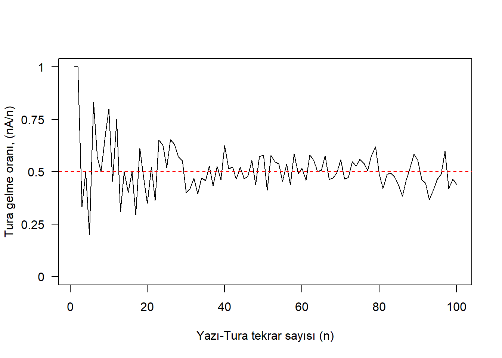
100 tekrar sonucunda
P[N][1] 0.44Tura gelme “sıklığı” ya da “olasılığı” 0.44 oldu. Şimdi tekrar sayısını 1000 yapalım:
set.seed(155)
N <- 1000
P <- numeric(N)
for (n in 1:N){
x <- sample(c(1, 0), n, replace = TRUE)
P[n] <- sum(x==1)/n
}
# 1 = Tura, 0 = Yazı
P[N][1] 0.496# grafik
plot(P, type="l",
xlab="Yazı-Tura tekrar sayısı",
ylab="Tura gelme oranı")
abline(h=0.5, lty="dashed", col="red")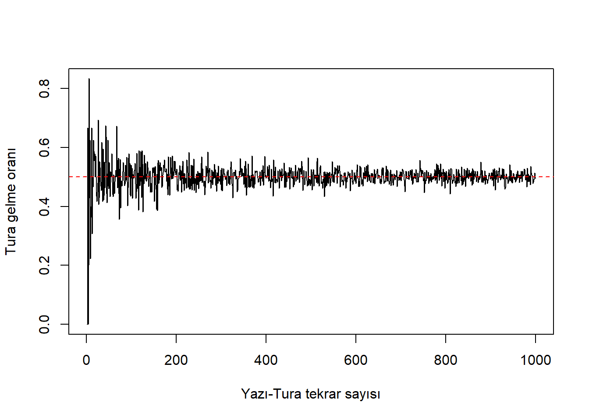
Tura gelme sıklığı 0.496 oldu ve teorik olasılığa daha fazla yaklaştı. Her atışın sonucu bağımsız olduğundan, kısa vadede sonuçlar rastgele dağılabilir. Örneğin, ilk 10 atışta 7 kez tura gelebilir, 3 kez yazı gelebilir. Ancak uzun vadede bu sıklık, teorik olasılık olan 0.5’e yaklaşacaktır.
Pay senedi piyasasında endeksin günlük kapanış değerinin yönünün olasılığını bulmaya çalışalım. BIST100 endeksinin 03/01/2003-29/09/2021 dönemi günlük kapanış değerleri kullanılarak yüzde değişimleri hesaplanmıştır. Günlük değişimlerin işaret \(+\) ise 1, \(-\) ise 0 değerini alan bir değişken oluşturulmuştur. BIST100yon.rda bu değişkeni içermektedir:
load("Data/BIST100yon.rda")
n <- length(BIST100yon)
n [1] 4695table(BIST100yon)/nBIST100yon
0 1
0.4656017 0.5343983 4695 günlük yön bilgisinden hareketle borsanın düşüşle kapandığı günlerin yaklaşık %47, artışla kapandığı günlerin ise %53 olduğunu görüyoruz.
artis_oran <- cumsum(BIST100yon)/(1:n)
# ilk 10 gün
options(digits=2)
artis_oran[1:10] [1] 1.00 0.50 0.33 0.50 0.60 0.50 0.57 0.50 0.56 0.60# grafik
plot(artis_oran, type="l",
xlab="",
ylab="")
abline(h=0.5, lty="dashed", col="red")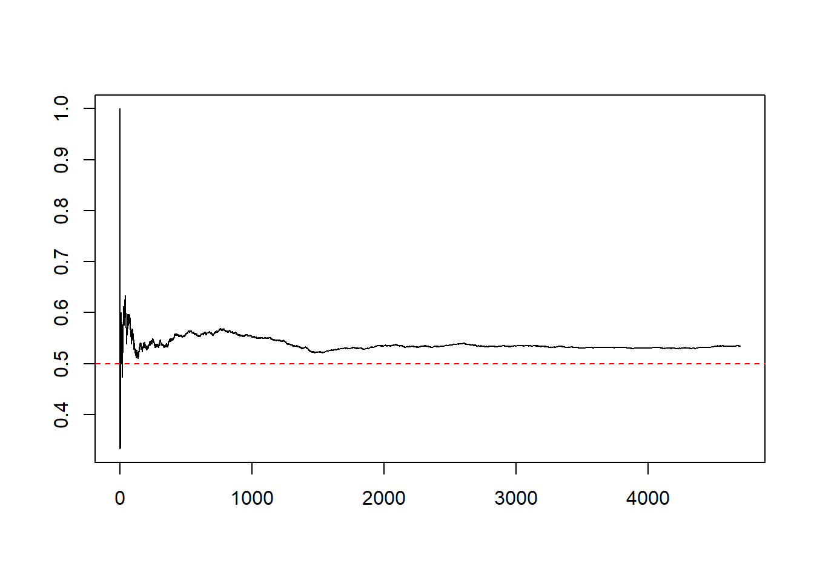
Şekil 4.5 dönem boyunca borsanın artışla kapandığı günlerin oranını göstermektedir. Borsanın yönünün ilk dönemler dışında pozitif olmasının olasılığı %50’nin biraz üzerindedir.
Buradan hareketle borsanın yönünün yazı-tura atmakla benzer olduğu sonucuna varamayız. Hilesiz para ya da zar atma gibi örneklerde sonuçları üreten süreci ya da modeli biliyoruz. Borsa örneğinde ise günlük kapanış değerinin yönüne ilişkin modeli, yani gözlenen sonuçların üretildiği süreci bilmiyoruz. Sadece sonuçları yani verileri gözlemliyoruz. Tipik olarak borsa endekslerinde günlük pozitif değişimler negatif değişimlerden biraz daha fazla gözlemlenir. Yazı-tura oyununda her tekrar bir öncekinden bağımsızdır. Borsanın yönünü tahmin etmek isteyen bir yatırımcı ise bunu yazı-tura atar gibi yapmaz. Pay senedi ve benzeri finansal piyasalar çok sayıda faktörden etkilenir. Bu nedenle günlük değişimler geçmişteki gelişmelerden bağımsız tekrarlar gibi düşünülemez. Şöyle de düşünebiliriz. Yazı-Tura oyununun sonucu için en iyi olasılık tahminimiz %50 iken, borsanın yönü için en iyi tahminimiz uzun dönem ortalaması %53 olmayabilir. Örneğin son beş günlük dönemde hep artışla kapanan bir piyasada sonraki gün için yön olasılığımız %50’den daha büyük olabilir (ya da tersi). Bağımsızlık, tahmin ve tahminci kavramlarını ilerleyen bölümlerde daha detaylı tartışacağız.
Şimdi iki para atımı deneyini ele alalım. Bu durumda örneklem uzayının \[
S = \{TT, TY, YT, YY\}
\] olduğunu biliyoruz. A olayını “iki paranın tura olması” ve B olayını “en az bir paranın yazı gelmesi” olarak tanımlayalım. \[
A = \{TT\}
\] \[
B = \{TY, YT, YY\}
\] Sezgisel olarak bu olasılıkların \(P(A)=0.25\) ve \(P(B)=0.75\) olduğunu bulabiliriz. Paraların hilesiz olduğu ve yinelemelerin birbirlerini etkilemediği varsayımları altında örneklem uzayındaki her bir olayın gerçekleşme şansı \(1/4\) olur. Buradan ilgili olasılıklar kolayca bulunabilir. Şimdi R ile bu deneyin simülasyonunu yapalım:
set.seed(155)
N <- 1000
P_A <- numeric(N)
for (n in 1:N){
para1 <- sample(c(1, 0), n, replace = TRUE) # 1.para, T=1, Y=0
para2 <- sample(c(1, 0), n, replace = TRUE) # 2.para, T=1, Y=0
P_A[n] <- sum(para1==1 & para2==1)/n # (1,1) olayının sıklığı
}
P_A[N][1] 0.24# grafik
plot(P_A, type="l",
xlab="İki para deneyi tekrar sayısı",
ylab="Tura-Tura gelme oranı")
abline(h=0.25, lty="dashed", col="red")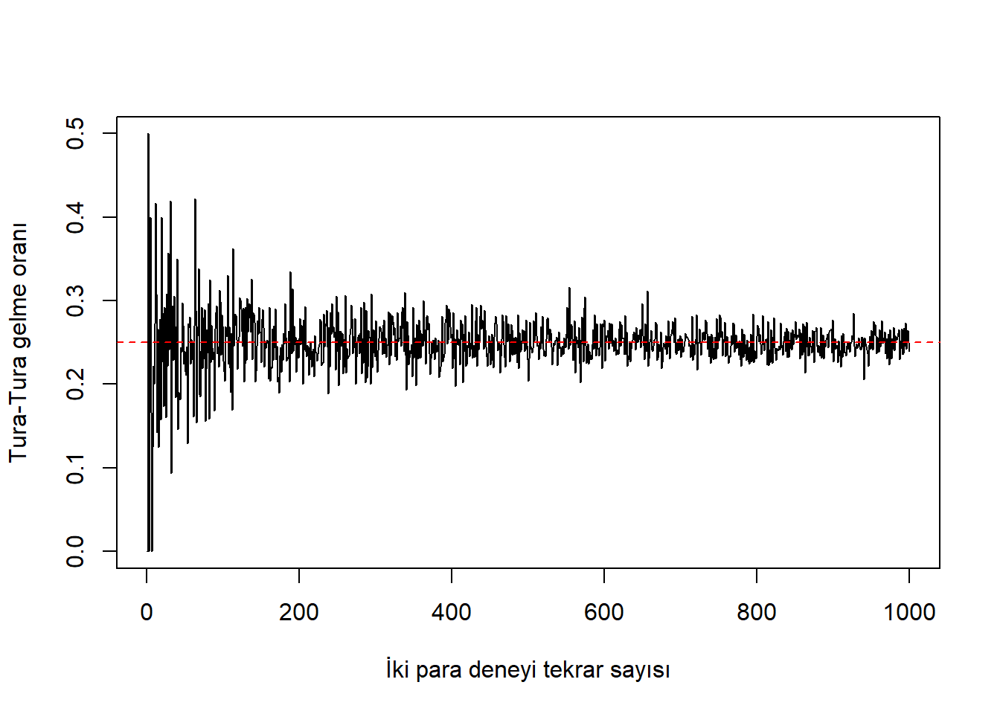
set.seed(156)
N <- 1000
P_B <- numeric(N)
for (n in 1:N){
para1 <- sample(c(1, 0), n, replace = TRUE) # 1.para, T=1, Y=0
para2 <- sample(c(1, 0), n, replace = TRUE) # 2.para, T=1, Y=0
P_B[n] <- sum(para1==0 | para2==0)/n # B="en az biri 0" olayının sıklığı
}
P_B[N][1] 0.76# grafik
plot(P_B, type="l",
xlab="İki para deneyi tekrar sayısı",
ylab="P(en az bir Yazı)")
abline(h=0.75, lty="dashed", col="red")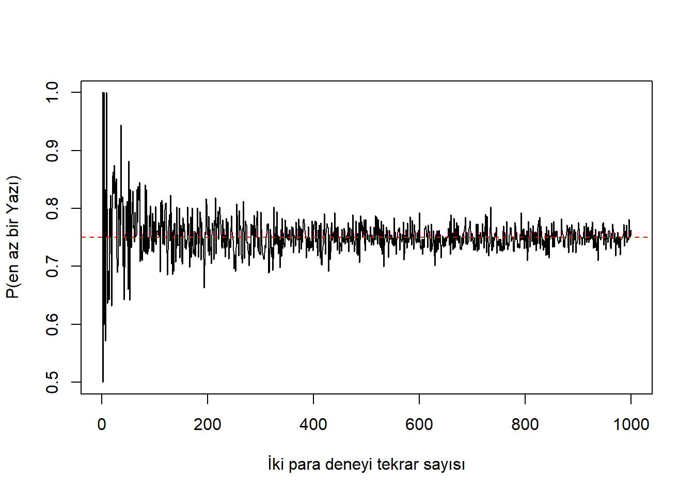
Sıklık yaklaşımının simülasyonu sezgisel olasılıklarla yaklaşık aynı sonucu verdi.
R’da olasılıkların simülasyonunu yapmanın başka bir yolu replicate() fonksiyonudur. İki para atışında TT gelme olasılığını yaklaştırmak istersek aşağıdaki komutları kullanabiliriz:
set.seed(567)
TT <- replicate(10000, {
iki_para <- sample(c("T", "Y"), 2, replace = TRUE)
iki_para[1]=="T" & iki_para[2]=="T"
})
mean(TT)[1] 0.25Burada replicate() fonksiyonunun ilk girdisi tekrar sayısıdır. Küme parantezi {} içinde ise replikasyonu yapacağımız sample() fonksiyonu yer almaktadır. Sonuçlar ise iki_para vektöründe saklanacaktır. iki_para[1]=="T" & iki_para[2]=="T" komutu ise çıktıyı belirleyecektir. Her iki koşul doğru olduğunda TRUE (1) ya da FALSE (0) değerini alacaktır. Bunun ortalaması ise gerçekleşme oranını verecektir. Alıştırma olarak replicate() komutunu kullanarak “en az birinin Yazı gelmesi” olasılığını yaklaştırınız.
Yazı-Tura ve borsanın yönü deneylerini tekrar düşündüğümüzde Tura gelme olasılığı ile borsanın günü artışla tamamlama olasılığının önemli bir farka işaret ettiğini görüyoruz. Tura gelme olasılığı, paranın hilesiz olduğu ve bağımsızlık varsayımları altında, herkes tarafından %50 olarak kabul edilir. Bu anlamda objektif/nesneldir. Borsanın yarın artışla kapanma olasılığı ise özneldir, kişiden kişiye değişir. Aslında yazı-tura deneyinde de olasılıkların öznel olarak tanımlanması mümkündür. Atılan paranın hileli olduğunu düşünüyorsak %50-%50 olasılık yerine %40-%60 olasılıkların daha uygun olduğu sonucuna varabiliriz.
Bayesçi ya da sübjektif/öznel yaklaşım, frekans yaklaşımına göre olasılık kavramını daha geniş bir perspektiften ele alır. Bu yaklaşım olasılığı “bir olayın gerçekleşmesine ilişkin inanç düzeyi” olarak tanımlar. Borsanın gelecekteki yönüne ya da bir futbol maçının sonucuna ilişkin olasılıklar kişiden kişiye değişebilir.
Önemli farklara sahip olsalar da hem sıklık hem de öznel olasılık yaklaşımları aynı matematiksel kurallara uyar.
Bir deneyin olanaklı tüm sonuçlarını içeren örneklem uzayını \(S\), bu kümedeki temel sonuçları \(E_i\), ve bu uzay içinde tanımlı herhangi bir olayı \(A\) ve \(A\)’nın olasılığını \(\mathbb{P}(A)\) ile gösterelim.
Önerme 4.1 (Olasılıklar 0 ile 1 arasında değerler alır) \(S\) içinde tanımlı bir \(A\) olayı \[ 0\le \mathbb{P}(A)\le 1 \] koşulunu sağlamak zorundadır. Olasılıklar negatif ya da 1’den büyük olamaz. \(\mathbb{P}(A)=0\) ise bu olayın kesin olarak gerçekleşmeyeceği, \(\mathbb{P}(A)=1\) ise kesin olarak gerçekleşeceği anlamına gelir.
Önerme 4.2 (Bir olayın olasılığı) \(S\) içinde tanımlı bir \(A\) olayının olasılığı \[ \mathbb{P}(A) = \sum_{i\in A} \mathbb{P}(E_i) \tag{4.2}\] ile bulunabilir. Bu toplam \(A\) olayının gerçekleşmesi ile sonuçlanan temel olaylar üzerinedir.
Önerme 4.3 (Olasılıkların toplamı) \(S\) örneklem uzayının olasılığı \[ \mathbb{P}(S) = \sum_{i\in S} \mathbb{P}(E_i) = 1 \] olur. Örneklem uzayında yer alan temel sonuçları olasılıklarının toplamı birdir.
Bu önermelerden hareketle olasılık hesaplamalarına ilişkin tüm kuralları türetebiliriz. \(A\) olayının gerçekleşmemesini \(A\) kümesinin tümleyeni olarak tanımlarsak: \[ \mathbb{P}(A)+\mathbb{P}(A^c) = \mathbb{P}(S)=1 \tag{4.3}\] Buradan \[ \mathbb{P}(A^c)=1-\mathbb{P}(A) \tag{4.4}\] olur. Boş kümenin olasılığı her zaman sıfırdır: \[ \mathbb{P}(\emptyset)=\mathbb{P}(S^c)=0 \]
\(A\) ve \(B\) karşılıklı bağdaşmaz (ayrık) iki olay ise bu olayların birleşiminin olasılığı \[ \mathbb{P}(A\cup B)=\mathbb{P}(A)+\mathbb{P}(B) \tag{4.5}\] olur. Ayrık olmadıkları durumda bu kural geçerli olmaz.
Örnek 4.10 Türkiye’e kan grubu sıklıkları yüzde olarak aşağıdaki tabloda verilmiştir. Şekil 4.8 bu oranların (%) çubuk çizimini göstermektedir.
# Türkiye'de gözlemlenen kan grubu sıklıkları
# kaynak: https://en.wikipedia.org/wiki/Blood_type_distribution_by_country
kan_grubu <- c(29.8, 37.8, 14.2, 7.2, 3.9, 4.7, 1.6,0.8)
names(kan_grubu) <- c("O+", "A+", "B+", "AB+", "O−", "A−", "B−", "AB−")
print(kan_grubu) O+ A+ B+ AB+ O− A− B− AB−
29.8 37.8 14.2 7.2 3.9 4.7 1.6 0.8 barplot(kan_grubu)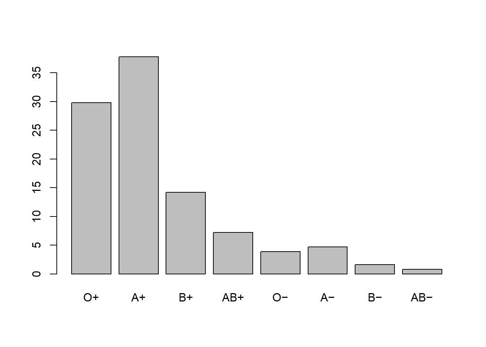
Buna göre rassal seçilmiş bir bireyin kan grubunun O+ ya da A+ olma olasılığı kaçtır?
Çözüm:
Bu olaylar karşılıklı bağdaşmaz olduğu için istenen olasılık \[ \mathbb{P}(\mbox{O+ grubu} \cup~ \mbox{A+ grubu}) = \%29.8 + \%37.8= \%67.6 \] olur.
\(A\) ve \(B\) ayrık olaylar değilse, yani birlikte gerçekleşmeleri mümkünse, olayların birleşiminin olasılığı \[ \mathbb{P}(A\cup B)=\mathbb{P}(A)+\mathbb{P}(B)-\mathbb{P}(A\cap B) \tag{4.6}\] olur. Kesişim olasılığı, \(\mathbb{P}(A\cap B)\), bu olayların birlikte gerçekleşme olasılıklarıdır.
Bu kural genelleştirilebilir. \(A\), \(B\) ve \(C\) üç olay ise bu olayların birleşiminin olasılığı \[ \mathbb{P}(A\cup B\cup C)=\mathbb{P}(A)+\mathbb{P}(B)+\mathbb{P}(C) \\ -\mathbb{P}(A\cap B)-\mathbb{P}(A\cap C)-\mathbb{P}(B\cap C)+\mathbb{P}(A\cap B\cap C) \tag{4.7}\]
Tanım 4.1 (Boole eşitsizliği) \(A_1,\ldots,A_k\) bir olaylar dizisi ise bu olayların birleşiminin, \(\bigcup_{i=1}^k A_i\) olasılığı \[ \mathbb{P}\left(\bigcup_{i=1}^k A_i \right)\le \sum_{i=1}^k \mathbb{P}(A_i) \tag{4.8}\] olasılıklar toplamından küçük ya da eşit olur. \(A_1,\ldots,A_k\) olayları karşılıklı bağdaşmaz ise \[ \mathbb{P}\left(\bigcup_{i=1}^k A_i \right) = \sum_{i=1}^k \mathbb{P}(A_i) \tag{4.9}\] eşitlik sağlanır. Aksi durumda \[ \mathbb{P}\left(\bigcup_{i=1}^k A_i \right) < \sum_{i=1}^k \mathbb{P}(A_i) \tag{4.10}\] olur.
Örneklem uzayındaki her bir temel sonucun gerçekleşme olasılığı aynı ise ve örneklem uzayında toplam \(n\) temel sonuç varsa \[ \mathbb{P}(E_i) = \frac{1}{\mbox{Temel sonuç sayısı}} = \frac{1}{n} \] olur.
Örnek 4.11 Altı yüzü olan hilesiz bir zar atıldığında temel sonuçların her biri için olasılık \(1/6\) olur. \[ S = \{1,2,3,4,5,6\} \] \[ \mathbb{P}(E_1) = \ldots = \mathbb{P}(E_6) = \frac{1}{6} \]
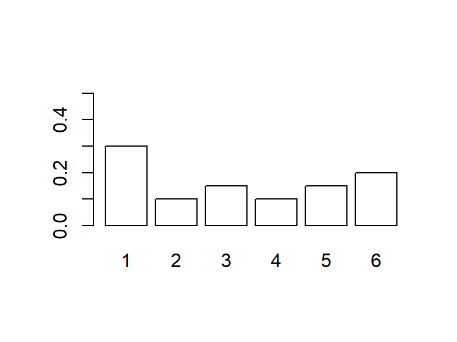
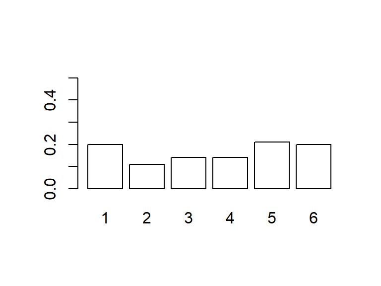
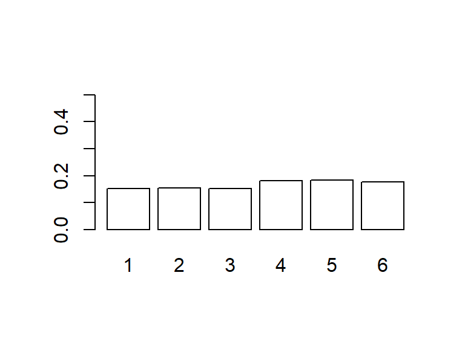
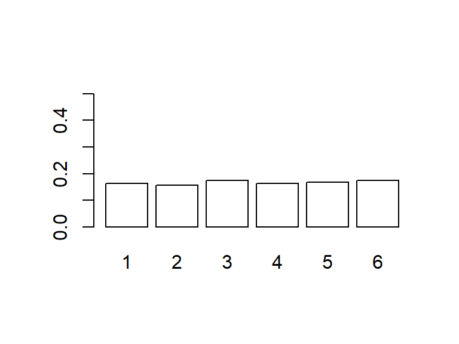
Şekil 4.9 zar atımı deneyinde temel olayların sıklıklarını göstermektedir. Tekrar sayısı \(n\) arttıkça temel olayların sıklıkları teorik olasılık değerine (\(1/6\)) yaklaşmaktadır.
Eğer bir \(A\) olayı örneklem uzayında tanımlı \(n\) temel olaydan \(n_A\) kadarını içeriyorsa \[ \mathbb{P}(A) = \frac{n_A}{n} \] olur.
Örnek 4.12 Hilesiz zar deneyinde \(A\) olayını zarın çift gelmesi olarak tanımlarsak bu olayın gerçekleşmesiyle sonuçlanan temel olaylar \[
A = \{2,4,6\}
\] olur. Buradan \[
\mathbb{P}(A) = \frac{3}{6} = \frac{1}{2}
\] bulunur. R programında bu deneyin 1000 tekrarını yapalım:
set.seed(101)
options(digits = 4)
x <- sample(c(1,2,3,4,5,6), 1000, replace=TRUE)
xcift <- x[x==2|x==4|x==6]
# A olayına yol açan temel olaylar
table(xcift)/1000xcift
2 4 6
0.159 0.177 0.166 sum(table(xcift)/1000)[1] 0.502#
A <- as.numeric((x==2) | (x==4) | (x==6))
table(factor(A, labels=c("Tek","Çift")))/1000
Tek Çift
0.498 0.502 #barplot(table(A)/1000, names.arg = c("Çift","Tek"), col="white")Örnek 4.13 Hilesiz bir madeni para 3 kere atılıyor ve gelen sonuçlar kaydediliyor. En az 2 tura gelme olasılığını bulun ve R programında simülasyonunu yapın.
Çözüm:
Örneklem uzayını oluşturalım: \[ S=\{TTT, ~TTY, ~TYT, ~YTT, ~YYT, ~TYY, ~YTY, ~YYY\} \] Bu temel olayların gerçekleşme şansı aynıdır: \(1/8\). Bunların arasında \(A\) olayına yol açan temel olaylar \[ A=\{TTT, ~TTY, ~TYT, ~YTT\} \] olur. Öyleyse \(A\) olayının olasılığı \[ \mathbb{P}(A)=\frac{n_A}{n} = \frac{4}{8} = 0.5 \] olur.
set.seed(444)
N <- 1000
E <- matrix(NaN, nrow = N, ncol = 8)
colnames(E) <- c("TTT", "TTY", "TYT", "YTT", "YYT", "TYY", "YTY", "YYY")
para1 <- sample(c(1, 0), N, replace = TRUE) # 1.para, T=1, Y=0
para2 <- sample(c(1, 0), N, replace = TRUE) # 2.para, T=1, Y=0
para3 <- sample(c(1, 0), N, replace = TRUE) # 2.para, T=1, Y=0
# temel olaylar
E[,1] <- (para1==1 & para2==1 & para3==1) #
E[,2] <- (para1==1 & para2==1 & para3==0)
E[,3] <- (para1==1 & para2==0 & para3==1)
E[,4] <- (para1==0 & para2==1 & para3==1)
E[,5] <- (para1==0 & para2==0 & para3==1)
E[,6] <- (para1==1 & para2==0 & para3==0)
E[,7] <- (para1==0 & para2==1 & para3==0)
E[,8] <- (para1==0 & para2==0 & para3==0) Burada \(N\times 8\) boyutlu \(E\) matrisi temel olaylardan hangisinin gerçekleştiğini gösteren bir indikatör matrisidir. Örneğin ilk 10 denemenin sonuçları aşağıdaki gibidir:
E[1:10,] TTT TTY TYT YTT YYT TYY YTY YYY
[1,] 0 0 0 0 0 0 1 0
[2,] 0 0 0 0 0 1 0 0
[3,] 0 0 1 0 0 0 0 0
[4,] 0 0 1 0 0 0 0 0
[5,] 1 0 0 0 0 0 0 0
[6,] 0 0 0 0 0 0 1 0
[7,] 0 0 0 0 0 0 0 1
[8,] 0 0 0 0 0 0 0 1
[9,] 1 0 0 0 0 0 0 0
[10,] 0 0 0 0 0 1 0 0Satırlar denemeleri, sütunlar ise temel olayları göstermektedir. Hücrenin 0 olması o denemede sütunda belirtilen temel olayın gerçekleşmediği, 1 olması ise gerçekleştiği anlamına gelmektedir. Örneğin ilk denemede TTT olayı gerçekleşmemiştir. İlk satıra baktığımızda ilk tekrarda YYT olayının gerçekleştiğini görüyoruz. Her satırda sütunlardan sadece birinin 1 değerini alması gerekir, yani temel olaylar aynı anda gerçekleşemez (karşılıklı bağdaşmaz). Bunun doğrudan sonucu \(E\) indikatör matrisinin satır toplamlarının her bir satır için 1 olması ve bunların toplamının \(N\) olmasıdır. Örneğimizde
sum(rowSums(E))[1] 1000olduğu kolayca görülür. Bu matrisin sütun ortalamaları temel olayların sıklıklarını gösterir:
# sütun ortalamaları sıklıkları verir
colMeans(E) TTT TTY TYT YTT YYT TYY YTY YYY
0.112 0.133 0.147 0.105 0.139 0.104 0.131 0.129 Şekil 4.10 temel olayların sıklıklarının çubuk grafiğini göstermektedir.
barplot(colMeans(E), col="white")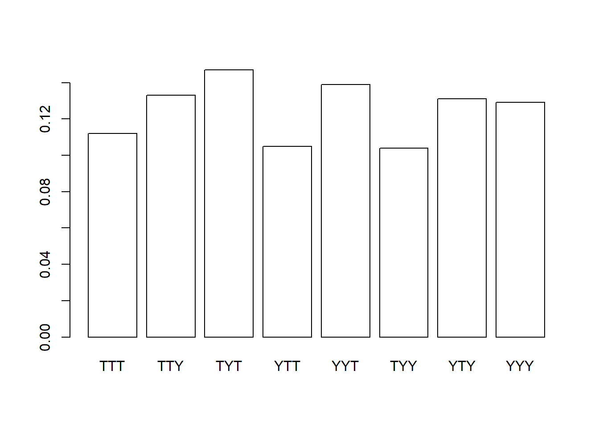
A olayının olasılığı A kümesinde yer alan temel olayların olasılıklarının toplamıdır. Yukarıdaki \(E\) matrisinden de görüleceği gibi birinci ve ikinci tekrarlarda A olayı gerçekleşmemişken, üçüncü, dördüncü ve beşinci tekrarlarda gerçekleşmiştir. Bunu ilgili sütunların toplamından hareketle bir indikatör değişkeni yardımıyla hesaplayabiliriz.
# A = en az 2 Tura olasılığı
# A = 1, olay gerçekleşti,
# = 0, olay gerçekleşmedi
A <- E[,1]+E[,2]+E[,3]+E[,4]
sum(A)/N[1] 0.4971000 tekrarlı bu simülasyonda 3 para atımı deneyinde en az iki Tura gelme sıklığı 0.497 olmuştur. Tekrar sayısı arttırılarak teorik olasılığa daha fazla yaklaşılır.
Tanım 4.2 (Bağımsızlık) Eğer \(A\) olayının gerçekleşmesi \(B\) olayını etkilemiyorsa (ya da tersi) bu iki olay birbirinden bağımsızdır. Bu durumda olayların birlikte gerçekleşme olasılığı \[ \mathbb{P}(A\cap B) = \mathbb{P}(A)\mathbb{P}(B) \tag{4.11}\] olur. Örneğin hilesiz bir para peşpeşe iki kere atıldığında birinci sonuç ikinci sonuç hakkında bilgi içermez, yani bu olaylar bağımsızdır. Öyleyse ikisinin de tura olma olasılığı \(0.5\times 0.5 = 0.25\) olur.
\(A\) ve \(B\) birbirinden bağımsız olmayan iki olay ise bu olayların birlikte gerçekleşme (\(A\cap B\)) olasılığı ne olur? Bu durumda bir olay verilmişken (gerçekleşmişken) diğer olayın olasılığını, yani koşullu olasılıkları hesaplamamız gerekir.
\(B\) verilmişken \(A\) olayının koşullu olasılığı \[
\mathbb{P}(A|B)=\frac{\mathbb{P}(A\cap B)}{\mathbb{P}(B)}
\tag{4.12}\] olur. Benzer şekilde \(A\) verilmişken \(B\) olayının koşullu olasılığı \[
\mathbb{P}(B|A)=\frac{\mathbb{P}(A\cap B)}{\mathbb{P}(A)}
\tag{4.13}\] olarak tanımlanır. \(\mathbb{P}(B|A)\) ve \(\mathbb{P}(A|B)\) notasyonundaki \(|\) sembolünün sağındaki olay verilmiş/gerçekleşmiş olaydır ve belirsizlik barındırmaz. \(|\) sembolünü R’daki “ya da” işlemiyle karıştırmayınız.
\(\mathbb{P}(A|B)\) ve \(\mathbb{P}(B|A)\) koşullu olasılıklarının birbirine eşit olması gerekmez. Paydada yer alan tekil olasılıklar 0 ise koşullu olasılık tanımsız olur.
Koşullu olasılık tanımında payın aynı olduğuna dikkat ediniz. Buradan hareketle \[ \mathbb{P}(A\cap B) = \mathbb{P}(A|B)\mathbb{P}(B) \tag{4.14}\] ve \[ \mathbb{P}(A\cap B) = \mathbb{P}(B|A)\mathbb{P}(A) \tag{4.15}\] yazabiliriz. Eğer \(A\) ve \(B\) birbirinden bağımsız olaylarsa bir olayın gerçekleşmesi diğeri hakkında bilgi vermez. Bu durumda \[ \mathbb{P}(A|B) = \mathbb{P}(A) \] ve \[ \mathbb{P}(B|A) = \mathbb{P}(B) \] olur.
Örnek 4.14 Hilesiz bir zar atılıyor ve çift sayı geldiği görülüyor. Zarın 6 olma olasılığı kaçtır?
Çözüm:
\[ \mathbb{P}(\{6\}~|~ \{2,4,6\})=\frac{\mathbb{P}(\{6\}~\cap~ \{2,4,6\})}{\mathbb{P}(\{2,4,6\})}=\frac{1/6}{3/6}=\frac{1}{3} \]
R ile simülasyonu:
set.seed(899)
# payda: A ve B olasılığı
A_ve_B <- replicate(10000, {
zar <- sample(1:6, 1, replace = TRUE)
(zar==6) & (zar==2 | zar==4 | zar==6)
})
P_A_ve_B <- mean(A_ve_B)
# pay: B olasılığı
B <- replicate(10000, {
zar <- sample(1:6, 1, replace = TRUE)
(zar==2 | zar==4 | zar==6)
})
P_B <- mean(B)
# koşullu olasılık
P_A_ve_B/P_B[1] 0.3347Önerme 4.4 B olayı verilmişken A ve B olaylarının birlikte gerçekleşme olasılıkları B verilmişken A olayının koşullu olasılığıdır: \[ \mathbb{P}(A\cap B| B) = \mathbb{P}(A|B) \] İspat: Doğrudan koşullu olasılık tanımını kullanarak \[ \begin{array}{lll} \mathbb{P}(A\cap B| B) &=& \frac{\mathbb{P}((A\cap B)\cap B)}{\mathbb{P}(B)}\\ &=& \frac{\mathbb{P}(A\cap (B\cap B)}{\mathbb{P}(B)}\\ &=& \frac{\mathbb{P}(A\cap B)}{\mathbb{P}(B)}=\mathbb{P}(A|B)\\ \end{array} \]
Alıştırma: \(\mathbb{P}(A\cup B|B)=?\)
Örneklem uzayındaki nesnelerin ve bunların arasında ilgilendiğimiz olayın gerçekleşmesiyle sonuçlananların sayısının olasılık hesaplamaları için önemli olduğunu gördük. Çoğu durumda bu nesnelerin açıkça listelenmesi zordur ya da mümkün değildir. Listelemek yerine belirli kuralları takip ederek bu nesneleri sayabiliriz.
Sayma işlemlerinde dikkat etmemiz gereken ilk nokta nesnelerin yerine konarak mı yoksa yerine konmadan mı seçildiğidir. Yerine koymadan örneklemede nesneler teker teker seçilir ve tekrar yerine konmaz. Diğer durumda ise seçilen nesneler yerine konur ve tekrar seçilme şansı olur. Örneğin sample() fonksiyonu ile 1-10 arası rakamdan 5’ini yerine koyarak ve koymadan seçelim:
set.seed(3)
sample(1:10, 5, replace = TRUE)[1] 5 10 7 4 10sample(1:10, 5, replace = FALSE)[1] 8 10 4 2 5replace = TRUE ile yerine koyarak rassal seçim yaptık. Bu durumda bazı nesnelerin tekrar seçildiğini görüyoruz.
Tanım 4.3 (Çarpım kuralı) Eğer bir işlemi ya da eylemi yapmanın \(n_1\) yolu varsa, başka bir işlemi yapmanın da \(n_2\) yolu varsa bu işlemleri birlikte yapmanın \(n_1\times n_2\) yolu vardır. Bu kural ikiden fazla eylemler için genelleştirilebilir.
Eğer her tekrarda olası sonuçların sayısı \(n\) ise deney \(r\) kere tekrar edildiğinde ortaya çıkan tüm sonuçların sayısı \(n^r\) olur. Bu kuralı 3 para atımı deneyinde örtük olarak kullanmıştık. Her para atımı tekrarının 2 sonucu vardır ve 3 kez tekrar edilirse olanaklı tüm sonuçların sayısı \(2^3=8\) olur.
Tanım 4.4 (Permütasyon) Yerine koymadan seçim yaptığımızda ve sıranın önemli olduğu durumlarda \(n\) nesnenin kaç farklı şekilde düzenlenebileceğini bulmak için faktöriyel işlemcisini \[ n!=n\times (n-1)\times (n-2)\times \ldots \times 2\times 1 \] kullanabiliriz. Faktöriyel (\(!\)) işlemcisi ayırdedilebilir nesnelerin kaç farklı şekilde sıralanabileceğini gösterir. Örneğin \(\{a,b,c,d,e\}\) nesnelerini sıralamanın \(5!=120\)
factorial(5)[1] 120yolu vardır. Hiç bir nesne içermeyen bir kümeyi sıralamanın ise sadece 1 yolu vardır. Bu nedenle \(0!=1\) olarak tanımlıdır.
Bu işlemi boşluk doldurmanın farklı yolları olarak düşünebiliriz. Aşağıdaki gibi 5 tane boşluk ya da kutu varsa, elimizdeki 5 nesneyi bu kutulara kaç farklı şekilde yerleştirebiliriz?
\[
-~-~-~-~-
\] Birinci kutu ya da boşluğu doldurmanın 5 yolu vardır: \[
5~-~-~-~-
\] İlk seçim yapıldıktan sonra geriye 4 nesne kalır, öyleyse ikinci kutuyu doldurmanın 4 yolu vardır: \[
5~4~-~-~-
\]
Benzer şekilde ilerlenirse faktöriyel tanımına ulaşılır ve çarpım kuralı uygulanarak ortaya çıkacak sonuç sayısı \[ 5\cdot 4 \cdot 3 \cdot 2\cdot 1 = 5! \] olur. Eğer yerine koyarak seçim yapsaydık bu durumda toplam nesne sayısı her boşluk doldurma eyleminde aynı olduğu için çarpım kuralından hareketle \[ 5\cdot 5 \cdot 5 \cdot 5\cdot 5 = 5^5 = 3125 \] olur.
Eğer \(n\) nesne arasından yerine koymadan \(r\) tanesini seçmek istiyorsak permütasyon tanımına ulaşırız: \[ P_r^n =\frac{n!}{(n-r)!} \] Eğer \(n\) nesne arasından \(n\) nesneyi yerine koymadan seçiyorsak faktoriyel tanımını elde ederiz.
Örneğin \(\{a,b,c,d,e\}\) harfleri arasından ikisini seçmenin farklı yollarının sayısı \[ P_2^5 =\frac{5!}{(5-2)!}=\frac{5\cdot4\cdot 3!}{3!}=20 \] olur.
Tanım 4.5 (Kombinasyon) Permütasyonda sıra önemliydi. Eğer yerine koymadan seçim yapıyorsak ve sıralama önemli değilse \(n\) nesnenin \(r\) kombinasyonu \[ C^n_r \equiv \begin{pmatrix}n\\ r \end{pmatrix} = \frac{n!}{r!(n-r)!} \] ile bulunur. Örneğin \(\{a,b,c,d,e\}\) arasından \(r=2\) harfin sırası önemsiz olarak seçilme sayısı \[ \begin{pmatrix}n\\ r \end{pmatrix} = \frac{5!}{2!(5-2)!}=10 \]
choose(5,2)[1] 10olur. combn() fonksiyonu ile bu nesneleri listeleyebiliriz:
combn(c("a","b","c","d","e"), 2) [,1] [,2] [,3] [,4] [,5] [,6] [,7] [,8] [,9] [,10]
[1,] "a" "a" "a" "a" "b" "b" "b" "c" "c" "d"
[2,] "b" "c" "d" "e" "c" "d" "e" "d" "e" "e" Permütasyonda (ab) ile (ba) farklı sonuç olarak kabul ediliyordu. Kombinasyonda ise sıra önemli olmadığından aynı olarak kabul edilir. Bu nedenle 5 nesnenin 2’li permütasyonu 20 iken, kombinasyonu 10 olur.
Örnek 4.15 Hilesiz bir madeni para 10 kere atılıyor. 4 Tura gelme olasılığı kaçtır?
Çözüm:
Bir madeni para atıldığında her birinin olasılığı \(p=0.5\) olan iki sonuçtan biri gerçekleşir, yazı (Y) ya da tura (T). Bu şekilde \(p\) ve \(1-p\) olasılıklarla iki sonucu olan denemelere Bernoulli denemeleri denir. Bu örneğimizde Bernoulli denemesini bağımsız şekilde \(n=10\) kere tekrarlıyoruz ve \(k=4\) sonucun Tura olma olasılığını hesaplamak istiyoruz.
Öncelikle 4 Tura gelmesinin kaç farklı biçimde oluşabileceğini düşünelim. Örneğin bunlardan biri aşağıdaki gibi olabilir:
\[
\frac{~Y}{1},~~\frac{~T}{2},~~\frac{~T}{3},~~\frac{~Y}{4},~~\frac{~Y}{5},~~\frac{~T}{6},~~\frac{~Y}{7},~~\frac{~T}{8},~~\frac{~Y}{9},~~\frac{~Y}{10}
\] Bu dizilimin gerçekleşme olasılığı kaçtır? Sonuçlar birbirinden bağımsız olduğu için \[
\frac{1}{2}\times\frac{1}{2}\times \ldots\times \frac{1}{2} = \left( \frac{1}{2}\right)^{10}=0.0009765625
\] buluruz. Sıra önemsiz olduğu için 4 Tura ve 6 Yazı ile sonuçlanan başka bir dizilimin olasılığı da aynı olur. Bizim istediğimiz olasılık tam olarak 4 Tura gelme olasılığıdır. Bunun için 4 Tura ve 6 Yazı gelmesinin olanaklı kaç dizilimi olduğunu bulmamız gerekir. Karşılıklı bağdaşmaz bu dizilimlerin sayısı 10 denemenin 4’lü kombinasyonu ile hesaplanabilir: \[
\begin{pmatrix}10\\ 4 \end{pmatrix} = \frac{10!}{4!(10-4)!}=210
\]
choose(10, 4)[1] 210Öyleyse her birinin gerçekleşme şansı \(0.0009765625\) olan 210 farklı Yazı-Tura dizilimi gözlemlenebilir. Tura sayısının tam olarak 4 olma olasılığı tüm bu olasılıkların toplamıdır. Ya da dizilim sayısı ile tekil bir dizilimin olasılığını çarparsak \[ \frac{10!}{4!(10-4)!}\times \left( \frac{1}{2}\right)^{10}=0.2051 \] buluruz.
Örnek 4.16 Önceki örnekte para hilesiz kabul edildiği için T ve Y gelme olasılıkları 0.5 olarak alınmıştı. Şimdi paranın yanlı olduğunu ve Tura gelme olasılığının \(p=0.6\), Yazı gelme olasılığının ise \(1-p=0.4\) olduğunu düşünelim. Bu durumda 10 denemede 4 Tura gelme olasılığı kaçtır?
Çözüm:
Parayı bir kez atarsak T gelme şansı 0.6 olur. İkinci paranın da T gelme olasılığı ise çarpım kuralıyla \(0.6\times 0.6=0.36\). Birinci paranın T ikinci paranın Y olma olasılığı ise \(0.6\times 0.4=0.24\) olur. Benzer şekilde önceki örnekte verdiğimiz \(Y,T,T,Y,Y,T,Y,T,Y,Y\) dizilimin gerçekleşme olasılığı: \[ 0.4\times 0.6\times 0.6\times 0.4\times 0.4 \times 0.6\times 0.4\times 0.6\times 0.4\times 0.4 = 0.6^4\times 0.4^6=0.0005308416 \] olur. 4 T ve 6 Y içeren olanaklı tüm dizilimlerin olasılığı aynıdır. Öyleyse toplam olasılık \[ \frac{10!}{4!(10-4)!}\times 0.6^4\times 0.4^6=0.111 \] yaklaşık 0.111 olur. Aslında 10 denemede gelen Tura sayısını tüm olanaklı \(0,1,\ldots,10\) değerler için hesaplayıp grafiğini çizebiliriz:
x <- 0:10
p <- numeric(11)
for (i in 0:10){
p[i+1] <- choose(10, i)*(0.6)^i*(0.4)^(10-i)
}
names(p) <- x
p 0 1 2 3 4 5 6 7
0.0001049 0.0015729 0.0106168 0.0424673 0.1114767 0.2006581 0.2508227 0.2149908
8 9 10
0.1209324 0.0403108 0.0060466 Olasılıklar toplamının
sum(p)[1] 1olduğuna dikkat ediniz. Şekil 4.11 bu olasılıkların dağılımını göstermektedir.
barplot(p,
xlab = "10 para atışında Tura gelme sayısı",
ylab = "Olasılık")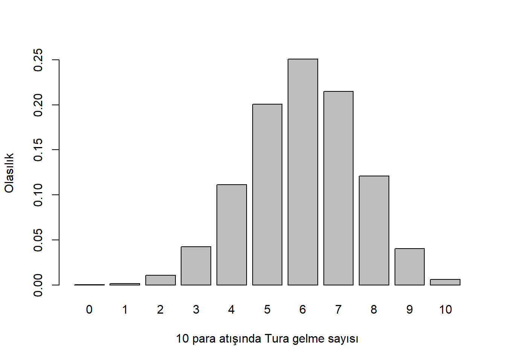
Önceki örnekte \(n\) bağımsız Bernoulli denemesinde \(x\) Tura olasılığı Binom dağılımı \[ \frac{n!}{x!(n-x)!} p^x (1-p)^{n-x} \] ile betimlenebilir. Bu dağılımın özelliklerini daha sonra inceleyeceğiz.
| Yerine koyarak | Yerine koymadan | |
|---|---|---|
| Sıralı | \(P(n, k) = n^k\) | \(P(n, k) = \frac{n!}{(n-k)!}\) |
| Yerine koyarak permütasyon | Yerine koymadan permütasyon | |
| Sırasız | \(C(n+k-1, k) = \binom{n+k-1}{k}\) | \(C(n, k) = \binom{n}{k}\) |
| Yerine koyarak kombinasyon | Yerine koymadan kombinasyon |
Her seferinde örneklem uzayının tüm elemanlarını yazmadan, sadece sayarak olasılıkları hesaplayabiliriz.
Örnek 4.17 (Doğumgünü problemi) Bir odada \(n\) kişi vardır. Bu kişilerin doğumgünlerinin gün/ay/yıl olarak açıklandığını düşünelim. Bu durumda en az bir eşleşme olasılığı kaçtır? Bir yılda 365 gün olduğunu varsayınız (artık yılları göz ardı ediyoruz). Ayrıca, yine basitlik amacıyla, doğumların tüm yıla eşit dağıldığını varsayalım.
Çözüm
Olayları tanımlayalım. \(A\) olayı: en az bir kişinin aynı doğumgününe sahip olması, \(A^c\): hiçbir çiftin aynı doğumgününe sahip olmaması. Bu iki olay birbirinin tümleyeni olduğuna göre istenen olasılık \[ \mathbb{P}(A) = 1 - \mathbb{P}(A^c) \] ile bulunabilir.
Örneklem uzayı: odadaki her birey için 365 olanaklı doğumgünü vardır. Öyleyse tüm bireyler için örneklem uzayındaki nesne sayısı \(365^n\) olur. Buradan \[ \mathbb{P}(A) = 1 -\mathbb{P}(A^c) = 1 - \frac{\#(A^c)}{\#(S)} \] yazılabilir. Burada \(\#(A^c)\), \(A^c\) olayının gerçekleşme sayısıdır.
Hiç eşleşmenin olmadığı durumda, birinci birey için 365 olanaklı gün, ikinci birey için 364 olanaklı gün, üçüncü birey için 363 olanaklı gün, vb. olur. Birey \(n\) için ise \(365-n+1\) olanaklı doğumgünü tanımlanabilir. Öyleyse, toplam gerçekleşme sayısı \[ \#(A^c) = 365\times 364\times363 \times \ldots \times (365-n+1) \] olur. Buradan \[ \mathbb{P}(A) = 1 -\frac{\#(A^c)}{\#(S)} = 1- \frac{365\times 364\times363 \times \ldots \times (365-n+1) }{ 365^n} \] Bu olasılık odadaki birey sayısına göre değişecektir.
dogumgunu_olasiligi <- function(n) {
# P(A^c): hiç eşleşmenin olmaması
P_Ac <- 1
for (i in 1:n) {
P_Ac <- P_Ac * (365 - (i - 1)) / 365
}
# P(A): en az iki kişinin aynı doğumgününe sahip olması
P_A <- 1 - P_Ac
return(P_A)
}# 10 kişi içinde aynı doğumgünü olasılığı kaçtır?
dogumgunu_olasiligi(10)[1] 0.1169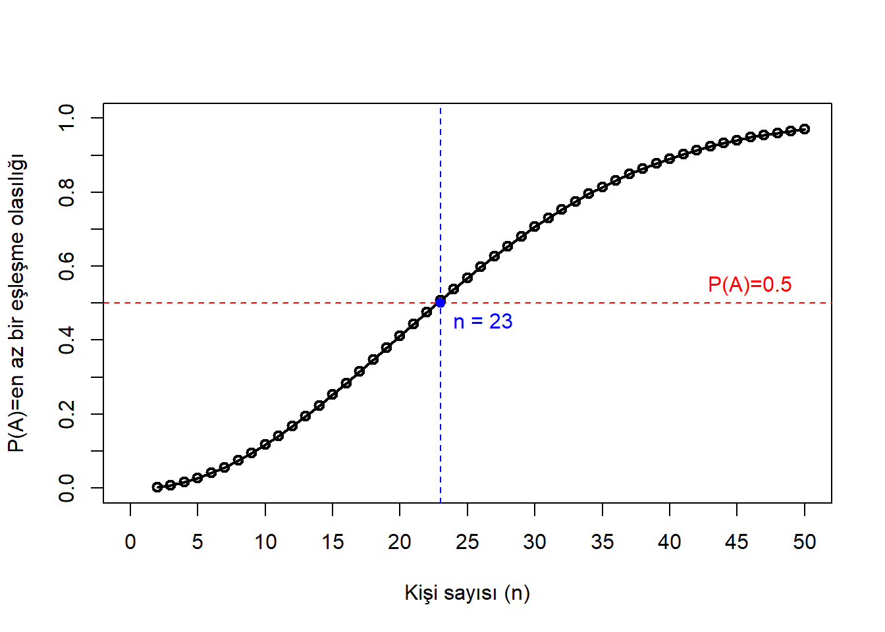
Şekil 4.12 kişi sayısına göre olasılıkların nasıl değiştiğini göstermektedir. 23 kişilik bir grupta en az iki kişinin aynı doğumgününe sahip olma olasılığı \(\%50\)’dir. 50 kişilik bir grupta ise yaklaşık \(\%97\)’dir.
Teorem 4.1 (Toplam olasılık kuralı) \(A\) ve \(B\) örneklem uzayı \(S\) içinde tanımlı iki olay olsun. \(B^c\) \(B\) olayının tümleyeni olmak üzere \[ \mathbb{P}(A) = \mathbb{P}(A\cap B) + \mathbb{P}(A\cap B^c) = \mathbb{P}(A|B)\mathbb{P}(B) + \mathbb{P}(A|B^c)\mathbb{P}(B^c) \tag{4.16}\] olarak yazılabilir.
İspat:
Herhangi bir olay ile bu olayın tümleyeninin birleşimi örneklem uzayını verir, yani \[ S = B\cup B^c \tag{4.17}\] olur. Yine herhangi bir olayın örneklem uzayı ile kesişimi o olayı verir: \[ A = A\cap S \tag{4.18}\] Bu ikisini birleştirirsek \[ A = A\cap (B\cup B^c) = (A\cap B)\cup (A\cap B^c) \tag{4.19}\] yazabiliriz. \((A\cap B)\) ve \((A\cap B^c)\) karşılıklı bağdaşmaz olaylar olduğu için \[ \mathbb{P}(A) = \mathbb{P}( (A\cap B)\cup (A\cap B^c) ) = \mathbb{P}(A\cap B) + \mathbb{P}(A\cap B^c) \tag{4.20}\] bulunur. Koşullu olasılık tanımından hareketle teoremin son eşitliğine kolayca ulaşılır.
Bu kural genelleştirilebilir.
Teorem 4.2 (Genelleştirilmiş toplam olasılık kuralı) \(A_1,A_2,\ldots,A_k\) olayları karşılıklı bağdaşmaz ve birleşimleri örneklem uzayı \(S\) olsun, yani \[ A_i\cap A_j=\emptyset,~~~i\ne j \tag{4.21}\] ve \[ \bigcup_{i=1}^k A_i = S \tag{4.22}\] Bu iki özelliği sağlayan \(A_1,A_2,\ldots,A_k\) olaylarına \(S\)’nin bir partisyonu denir. Bu durumda toplam olasılık kuralı \[ \mathbb{P}(B) = \sum_{i=1}^k \mathbb{P}(B\cap A_i) = \sum_{i=1}^k \mathbb{P}(B| A_i)\mathbb{P}(A_i) \tag{4.23}\] olur.
Teorem 4.3 (Bayes kuralı) \(A\) ve \(B\) örneklem uzayı \(S\)’de tanımlı iki olay olsun. \(B\) verilmişken \(A\)’nın koşullu olasılığı
\[ \mathbb{P}(A|B) = \frac{\mathbb{P}(B|A)\mathbb{P}(A)}{\mathbb{P}(B)} = \frac{\mathbb{P}(B|A)\mathbb{P}(A)}{\mathbb{P}(B|A)\mathbb{P}(A)+\mathbb{P}(B|A^c)\mathbb{P}(A^c)} \tag{4.24}\] olarak yazılabilir. Burada
olarak isimlendirilir. önsel olasılık \(B\) olayına ilişkin bilginin olmadığı durumda kişisel inanç düzeyini yansıtır. Bayes Teoremi \(B\) olayı gözlemlendikten sonra önsel olasılık \(\mathbb{P}(A)\)’nın nasıl güncelleştirildiğini ve ardıl olasılığa ulaşıldığını gösterir.
İspat:
Koşullu olasılık tanımından hareketle \[ \mathbb{P}(A\cap B) = \mathbb{P}(A|B)\mathbb{P}(B) = \mathbb{P}(B|A)\mathbb{P}(A) \] yazılabileceğini biliyoruz. Paydaya bunu yazıp, paya toplam olasılık kuralını uygularsak sonuca ulaşırız.
Bayesçi istatistik bu kural üzerinde inşa edilmiştir. Bayes kuralı \(\mathbb{P}(A)\) ile temsil edilen önsel (prior) olasılıkların, \(B\) olayı gerçekleştiğinde nasıl güncelleneceğine ilişkin bir yol sunar. Böylece \(B\) bilgisinden hareketle ardıl (posterior) olasılık \(\mathbb{P}(A|B)\):
\[
\mathbb{P}(A|B) = q \mathbb{P}(A),~~~q=\frac{\mathbb{P}(B|A)}{\mathbb{P}(B)}
\] ile bulunur.
Teorem 4.4 (Toplam olasılıklar ile Bayes kuralı) \(A_1,A_2,\ldots,A_k\) olayları \(S\)’ni bir partisyonu ise Bayes kuralı \[ \mathbb{P}(A_j|B) = \frac{\mathbb{P}(B|A_j)\mathbb{P}(A_j)}{\sum_{i=1}^k \mathbb{P}(B| A_i)\mathbb{P}(A_i)} \tag{4.25}\] Paydada yer alan \(\mathbb{P}(B)\)’nin toplam olasılık formunda yazıldığına dikkat ediniz.
Örnek 4.18 Bir hisse senedi piyasası uzmanı piyasanın yönüne ilişkin tahminlerde bulunmaktadır. Geçmiş verilerden hareketle uzmanın doğru tahmin yapma, yani hisse gerçekten yükseldiğinde yükselecek tahmini yapmış olması ve hisse düştüğünde uzmanın düşecek tahmini yapmış olma olasılığı \(P(D)=0.8\) olarak bulunmuştur. Hisse senedinin gerçekten yükselme olasılığı \(P(\mbox{Gerçek} +) = 0.6\) düşme olasılığı \(P(\mbox{Gerçek} -)=0.4\) olsun. Bu borsa uzmanı bir hissenin yükseleceğini söylediğinde gerçekten yükselme (doğru olma) olasılığı kaçtır?
Çözüm
Verilerden analistin doğru tahmin olasılığı \[ P(D)=P(\mbox{Tahmin}~+|\mbox{Gerçek} +)=P(\mbox{Tahmin}~-|\mbox{Gerçek} -)=0.8 \] ve yanlış tahmin yapma olasılığı \[ P(Y)=P(\mbox{Tahmin}~+|\mbox{Gerçek} -)=P(\mbox{Tahmin}~-|\mbox{Gerçek} +)=0.2 \] olarak yazılabilir.
Bayes teoreminden hareketle \[ \mathbb{P}(\mbox{Gerçek} +|\mbox{Tahmin}~+) = \frac{\mathbb{P}(\mbox{Tahmin}~+|\mbox{Gerçek} +)\mathbb{P}(\mbox{Gerçek} +)}{\mathbb{P}(\mbox{Tahmin}~+)} \] Paydada yer alan uzmanın yükseleceğini tahmin etme olasılığını bulmak için toplam kuralını uygulayabiliriz:
\[\begin{align*} \mathbb{P}(\text{Tahmin}~+) &= \mathbb{P}(\text{Tahmin}~+|\text{Gerçek} +)\mathbb{P}(\text{Gerçek} +) + \mathbb{P}(\text{Tahmin}~+|\text{Gerçek} -)\mathbb{P}(\text{Gerçek} -) \\ &= 0.8 \times 0.6 + 0.2 \times 0.4 \\ &= 0.48 + 0.08 \\ &= 0.56 \end{align*}\]Buradan
\[\begin{align*} \mathbb{P}(\text{Gerçek} +|\text{Tahmin}~+) &= \frac{\mathbb{P}(\text{Tahmin}~+|\text{Gerçek} +)\mathbb{P}(\text{Gerçek} +)}{\mathbb{P}(\text{Tahmin}~+)} \\ &= \frac{0.8 \times 0.6}{0.56} \\ &= 0.857 \end{align*}\]bulunur.
280 kişiden oluşan bir tüketici kümesine elektronik ticaret için geliştirilmiş yeni bir uygulamayı beğenip beğenmedikleri sorulmuştur. Bu tüketici kümesinin tüm tüketicilerden oluşan kümeyi iyi temsil ettiğini varsayalım. Anketi cevaplayan tüketicilerin cinsiyetleri (Kadın veya Erkek) ve ürünü beğenip beğenmedikleri (Evet veya Hayır) bir tablo halinde özetlenebilir. Tablo 4.1 bu verilerin özetini vermektedir. Bu tabloda yer alan sayılar ilgili satır ve sütunlara karşılık gelen özellikleri ya da cevapları sağlayan gözlem sayılarıdır. Örneğin ürünü beğenen kadınların sayısı 75 (Evet ve Kadın), beğenmeyen kadınların sayısı 63 (Hayır ve Kadın) olarak bulunmuştur. Bu kümedeki kadınların sayısı 138, erkeklerin sayısı 142, ürünü beğenenlerin sayısı 158 ve beğenmeyenlerin sayısı 122’dir.
| Kadın | Erkek | Toplam | |
|---|---|---|---|
| Evet | 75 | 83 | 158 |
| Hayır | 63 | 59 | 122 |
| Toplam | 138 | 142 | 280 |
Bu tabloyu sıklıklar yerine oranlarla da ifade edebiliriz (bkz. Tablo 4.2). Bu tablodaki hücreler ilgili satır ve sütunun gerçekleşmesine ilişkin arakesit/kesişim olasılıklarıdır. Örneğin rassal olarak bir tüketici seçersek bu tüketicinin erkek olması ve uygulamayı beğenme olasılığı \(\mathbb{P}(Evet\cap~Erkek)=0.30\)’dur. Benzer şekilde diğer olasılıklar da tanımlanabilir.
| Kadın | Erkek | Toplam | |
|---|---|---|---|
| Evet | 0.27 | 0.30 | 0.57 |
| Hayır | 0.22 | 0.21 | 0.43 |
| Toplam | 0.49 | 0.51 | 1 |
Bu tabloda satır ve sütunlarda temsil edilen kategorik özellikleri örneklem uzayındaki olay olarak tanımlayabiliriz. Bu iki olay kümesi (cinsiyet ve uygulamayı beğenme) \(A\) ve \(B\) grubu olaylar olarak tanımlanabilir. Örneğimizde \(A\) olayları ürünü beğenip beğenmeme durumunu, \(B\) olayları ise cinsiyeti temsil etmektedir. Her iki olay grubunun karşılıklı bağdaşmaz ve bütünü kapsayıcı olduğuna dikkat ediniz. Tablo 4.3 her biri iki gruptan oluşan bu çapraz tabloyu göstermektedir.
| \(B_1\) | \(B_2\) | Toplam | |
|---|---|---|---|
| \(A_1\) | \(\mathbb{P}(A_1\cap B_1)\) | \(\mathbb{P}(A_1\cap B_2)\) | \(\mathbb{P}(A_1)\) |
| \(A_2\) | \(\mathbb{P}(A_2\cap B_1)\) | \(\mathbb{P}(A_2\cap B_2)\) | \(\mathbb{P}(A_2)\) |
| Toplam | \(\mathbb{P}(B_1)\) | \(\mathbb{P}(B_2)\) | 1 |
Birleşik olasılıkları (arakesit ya da kesişim olasılıkları) gösteren bu çapraz tablodan hareketle koşullu olasılıkları ve marjinal olasılıkları kolayca hesaplayabiliriz.
| \(B_1\) | \(B_2\) | \(\ldots\) | \(B_c\) | ||
|---|---|---|---|---|---|
| \(A_1\) | \(\mathbb{P}(A_1\cap B_1)\) | \(\mathbb{P}(A_1\cap B_2)\) | \(\ldots\) | \(\mathbb{P}(A_1\cap B_c)\) | \(\mathbb{P}(A_1)\) |
| \(A_2\) | \(\mathbb{P}(A_2\cap B_1)\) | \(\mathbb{P}(A_2\cap B_2)\) | \(\ldots\) | \(\mathbb{P}(A_2\cap B_c)\) | \(\mathbb{P}(A_2)\) |
| \(\vdots\) | \(\vdots\) | \(\vdots\) | \(\ddots\) | \(\vdots\) | \(\vdots\) |
| \(A_r\) | \(\mathbb{P}(A_r\cap B_1)\) | \(\mathbb{P}(A_r\cap B_2)\) | \(\ldots\) | \(\mathbb{P}(A_r\cap B_c)\) | \(\mathbb{P}(A_r)\) |
| \(\mathbb{P}(B_1)\) | \(\mathbb{P}(B_2)\) | \(\ldots\) | \(\mathbb{P}(B_c)\) | 1 |
Buradaki analiz \(r\) ve \(c\) kategoriyi içeren iki grup olay için genelleştirilebilir. Tablo 4.4 karşılıklı bağdaşmaz ve bütünü kapsayıcı \(A_1,A_2,\ldots,A_r\) ve \(B_1,B_2,\ldots,B_c\) olay kümelerinin birleşik olasılıklarını göstermektedir. \(A\) grubu olaylar \(r\) kategoriden oluşurken, \(B\) grubu olaylar \(c\) kategori içermektedir.
Örnek 4.19 Bir anket çalışmasında 450 öğrenci üzerinde sosyal medya kullanımı ve akademik başarı (GPA) durumu incelenmiştir. Günlük sosyal medya kullanım süresi ile akademik başarı arasında aşağıdaki tablo oluşturulmuştur.
| Sosyal Medya Kullanımı (Günlük) | Yüksek (GPA ≥ 3.0) | Orta (2.0 ≤ GPA < 3.0) | Düşük (GPA < 2.0) | Toplam |
|---|---|---|---|---|
| Düşük (0-1 saat) | 80 | 30 | 10 | 120 |
| Orta (1-3 saat) | 70 | 60 | 20 | 150 |
| Yüksek (3 saatten fazla) | 40 | 50 | 90 | 180 |
| Toplam | 190 | 140 | 120 | 450 |
Bu tabloyu kullanarak cevaplayınız:
Rassal seçilmiş bir öğrencinin not ortalamasının (GPA) düşük olma olasılığı kaçtır?
Bir öğrencinin yüksek sosyal medya kullanımı ve düşük GPA’ye sahip olma olasılığı nedir?
Bir öğrencinin düşük sosyal medya kullanımı ve yüksek GPA’ye sahip olma olasılığı nedir? \[ \mathbb{P}(\text{Düşük sosyal medya ve yüksek GPA}) = \frac{80}{450} \approx 0.18 \] Yaklaşık %18 olur.
Sosyal medya kullanımının yüksek olduğu bir öğrencinin düşük GPA’ye sahip olma olasılığı nedir?
Örnek 4.20
load("Data/hane_anakutle.RData")
tablo1 <- table(hane_anakutle$tasarruf, hane_anakutle$saglik_merkezi_erisim)
print(tablo1)
1 2 3 4 5
Evet 352 1308 244 444 173
Hayır 934 3667 910 1438 530prop.table(tablo1)
1 2 3 4 5
Evet 0.0352 0.1308 0.0244 0.0444 0.0173
Hayır 0.0934 0.3667 0.0910 0.1438 0.0530mosaicplot(tablo1)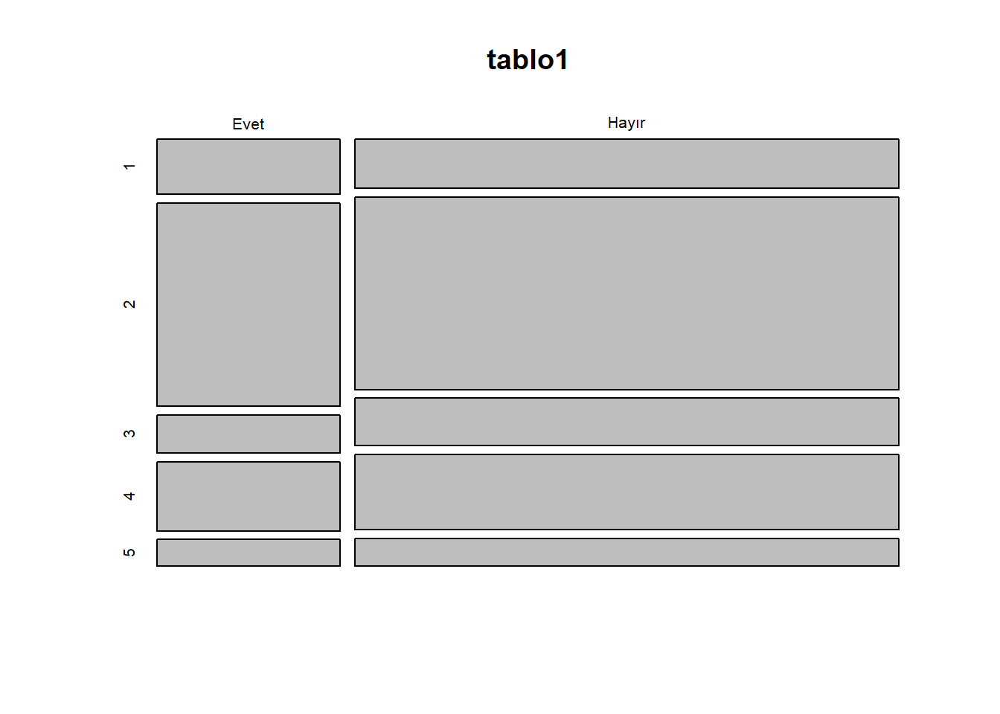
xtabs(~ tasarruf + saglik_merkezi_erisim,
data = hane_anakutle) saglik_merkezi_erisim
tasarruf 1 2 3 4 5
Evet 352 1308 244 444 173
Hayır 934 3667 910 1438 530Alıştırma 4.1 Bir sınıfta 30 öğrenci vardır. Öğrencilerden 12’si matematik, 18’i ise fizik dersine kayıtlıdır. 6 öğrenci her iki derse de kayıtlıdır. Rasgele seçilen bir öğrencinin sadece matematik veya sadece fizik dersine kayıtlı olma olasılığı nedir?
Alıştırma 4.2 (Monty Hall problemi) Bir yarışma programındasınız (Let’s Make a Deal). Karşınızda üç kapı var: Kapı 1, Kapı 2 ve Kapı 3. Bu kapılardan birinin arkasında bir araba ödülü var, diğer iki kapının arkasında ise keçi bulunuyor (yani ödül yok, keçiyi istemediğinizi varsayıyoruz). Sunucu (Monty Hall) size kapılardan birini seçmenizi istiyor. Seçiminizi yaptıktan sonra, Monty Hall sizin seçmediğiniz kapılardan birini açıyor ve arkasında bir keçi olduğunu gösteriyor. Sonra size şu soruyu soruyor: Seçiminizi değiştirmek ister misiniz yoksa aynı kapıda mı kalmak istersiniz?
Seçiminizi değiştirirseniz arabayı kazanma olasılığınız nedir? Aynı kapıda kalırsanız arabayı kazanma olasılığınız nedir?
Çözüm:
Sadece 1 kapının ardında araba ödülü olduğuna göre kazanma olasılığı \(\frac{1}{3}\), keçi olma olasılığı ise \(\frac{2}{3}\)’tür: \[ \P(\text{Araba}) = \frac{1}{3}, \quad \P(\text{Keçi}) = \frac{2}{3} \] Yarışmacının 1. kapıyı seçtiğini düşünelim. \(A_1\), \(A_2\), ve \(A_3\), sırasıyla, arabanın 1., 2., ve 3. kapıda olduğunu göstersin. Sunucu, her zaman sizin seçmediğiniz kapılardan birini açacaktır (keçi olacak şekilde). Bu bilgi ışığında seçtiğiniz kapıyı değiştirirseniz kazanma olasılığınız kaç olur?
Ödül (araba) kazanma olasılığı genel olarak aşağıdaki gibi yazılabilir: \[ \P(\mbox{Ödül kazan}) = \P(\mbox{Ödül kazan}~|~A_1)\P(Araba)+\P(\mbox{Ödül kazan}~|~A_2)\P(Araba)+\P(\mbox{Ödül kazan}~|~A_3)\P(Araba) \] \[ \P(\mbox{Ödül kazan}) = \P(\mbox{Ödül kazan}~|~A_1)\cdot \frac{1}{3} +\P(\mbox{Ödül kazan}~|~A_2)\cdot \frac{1}{3}+\P(\mbox{Ödül kazan}~|~A_3)\cdot \frac{1}{3} \]
Yarışmacının “değiştir” stratejisini takip ettiğini düşünelim. Yarışmacı Kapı 1’i seçmişti. Eğer gerçekten ödül Kapı 1’de ise araba ödülü kesin olarak kaybedilir, yani \[ \P(\mbox{Ödül kazan}~|~A_1) = 0 \] olur. Eğer araba Kapı 2 ya da Kapı 3’te ise “değiştir” stratejisi kazanmayla sonuçlanır: \[ \P(\mbox{Ödül kazan}) = 0\cdot \frac{1}{3} +1\cdot \frac{1}{3}+1\cdot \frac{1}{3}=\frac{2}{3} \]
Sonuç olarak seçimi değiştirdiğimizde kazanma olasılığımız daha yüksektir. Eğer seçiminizi değiştirirseniz, ilk başta keçiyi seçmişseniz (olasılık 2/3), araba olan kapıya geçeceksiniz ve kazanacaksınız. Eğer arabanın olduğu kapıyı seçmişseniz (olasılık 1/3), seçim değiştirerek kaybedeceksiniz. Bu durumda, seçiminizi değiştirirseniz arabayı kazanma olasılığınız 2/3 olur. Seçiminizi değiştirmezseniz, arabayı kazanma olasılığınız sadece 1/3 olacaktır.
Bu oyunun R’da simülasyonunu yapabiliriz. Önce tesadüfi şekilde araba ve keçileri kapılara atayalım:
set.seed(1234)
kapilar <- c("keçi", "keçi", "araba")
kapilar <- sample(kapilar) # rassal olarak ödülü atama
kapilar[1] "keçi" "araba" "keçi" Oyuncunun tercihini rassal olarak belirleyelim:
# oyuncunun seçimi
tercih <- sample(1:3, 1)
tercih[1] 3Sunucu Monty Hall kalan kapılardan keçili olanı açacaktır:
# Monty keçili bir kapıyı açıyor (yarışmacının seçtiği kapıyı açamaz)
monty_nin_secenekleri <- setdiff(1:3, tercih)
monty_nin_secenekleri[1] 1 2# bu iki kapıdan birini rassal olarak seçer.
# Eğer iki kapıdan birinde araba diğerinde keçi varsa her zaman keçiyi seçer.
# Eğer ikisinde de keçi varsa rassal olarak birini seçer (1/2 olasılıkla)
if (sum(kapilar[monty_nin_secenekleri]=="keçi")==1) {
monty_nin_actigi_kapi <-
monty_nin_secenekleri[kapilar[monty_nin_secenekleri]=="keçi"]
} else {
monty_nin_actigi_kapi <- sample(monty_nin_secenekleri, 1)
}
# ekrana yaz
monty_nin_actigi_kapi[1] 1Şimdi yarışmacı “Değiştir” stratejisini uygulayıp uygulamamaya karar verecek. Önündeki seçeneği belirleyelim:
# Yarışmacı ya kapıda kalacak ya da diğer kapıya geçecek
# Seçim değiştirmek için açılmayan kapıyı belirle
degistir_tercih <- setdiff(1:3, c(tercih, monty_nin_actigi_kapi))
degistir_tercih[1] 2Yarışmacı ya ilk tercihinde kalacak (Değiştirme) ya da bu kapıya geçecek (Değiştir). Eğer değiştirirse ve bu kapıda araba varsa kazanacak, aksi takdirde kaybedecek:
# Kazanma durumu:
if (kapilar[degistir_tercih] == "araba") {
degistir_kazanır <- 1 # Seçimi değiştirdiğinde kazandı
}
if (kapilar[tercih] == "araba") {
degistirmemek_kazanır <- 1 # Seçimini değiştirmediğinde kazandı
}Şimdi olasılığın sıklık tanımından hareketle bu oyununun çok sayıda tekrarını yapan bir fonksiyon yazalım ve “Değiştir” stratejisinin olasılığını yaklaştırmaya çalışalım.
# Monty Hall probleminin simülasyonu için bir fonksiyon
sim_monty_hall <- function(nsim = 10000){
degistir_kazanır <- 0
degistirmemek_kazanır <- 0
for (i in 1:nsim) {
kapilar <- c("keçi", "keçi", "araba")
kapilar <- sample(kapilar) # rassal olarak ödülü atama
# oyuncunun seçimi
tercih <- sample(1:3, 1)
# Monty keçili bir kapıyı açıyor
monty_nin_secenekleri <- setdiff(1:3, tercih)
if (sum(kapilar[monty_nin_secenekleri]=="keçi")==1) {
monty_nin_actigi_kapi <-
monty_nin_secenekleri[kapilar[monty_nin_secenekleri]=="keçi"]
} else {
monty_nin_actigi_kapi <- sample(monty_nin_secenekleri, 1)
}
degistir_tercih <- setdiff(1:3, c(tercih, monty_nin_actigi_kapi))
# Kazanma durumu:
# Değiştirirse:
if (kapilar[degistir_tercih] == "araba") {
degistir_kazanır <- degistir_kazanır + 1
}
# Değiştirmezse:
if (kapilar[tercih] == "araba") {
degistirmemek_kazanır <- degistirmemek_kazanır + 1
}
}
# Sonuçların oranlarını hesapla
degistir_kazanma_orani <- degistir_kazanır / nsim
degistirmeme_kazanma_orani <- degistirmemek_kazanır / nsim
# Sonuçları yazdır
cat("Seçim değiştirildiğinde kazanma oranı: ", degistir_kazanma_orani * 100, "%\n")
cat("Seçimde kaldığında kazanma oranı: ", degistirmeme_kazanma_orani * 100, "%\n")
# Sonuçları geri döndür (grafik için)
return(c(degistir_kazanma_orani, degistirmeme_kazanma_orani))
}Oyunu 10000 kez tekrarlayalım ve değiştirme stratejisinin kazanma olasılığını yaklaştıralım:
# Simülasyonu 10,000 kez çalıştır
set.seed(123)
sonuclar <- sim_monty_hall(nsim=10000)Seçim değiştirildiğinde kazanma oranı: 66.47 %
Seçimde kaldığında kazanma oranı: 33.53 %Değiştirme stratejisinin olasılığı %66.5 olarak bulundu (bkz. Şekil 4.13). Bu teorik olasılığa \(2/3\approx 0.6667\) oldukça yakındır.
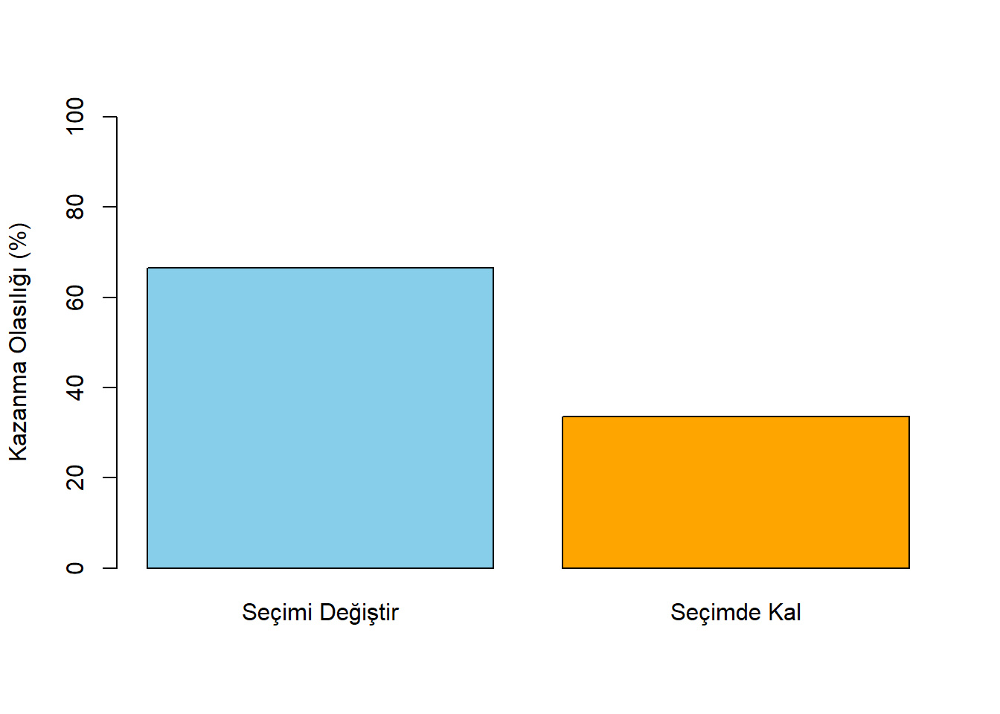
Bayes teoremi veya olasılık kuralları kullanılarak da bu sonuç gösterilebilir. \(A_1\), \(A_2\), ve \(A_3\), sırasıyla, arabanın 1., 2., ve 3. kapıda olması şeklinde tanımlamıştık. \(M_1\), \(M_2\), ve \(M_3\), sırasıyla, sunucunun 1., 2., ve 3. kapıları açması olsun.
Oyuncunun 1. kapıyı seçtiğini, sunucunun 2. kapıyı açtığını düşünelim. Bayes teoreminden hareketle \[ \P(A_1~|~M_2) = \frac{\P(M_2~|~A_1)\P(A_1)}{\P(M_2)} \] Araba 1. kapının ardındaysa Monty’nin 2. kapıyı açma olasılığı 1/2’dir. Öyleyse \[ \P(A_1~|~M_2) = \frac{\P(M_2~|~A_1)\P(A_1)}{\P(M_2)}=\frac{(1/2)\cdot (1/3)}{1/2} = \frac{1}{3} \] Yarışmacının ilk tercihi 1. kapıydı. Monty Hall 2. kapıyı açtıktan sonra bu tercihin (değiştirme yok) kazanma şansı üçte birdir. Öyleyse değiştirdiği durumda kazanma şansı 2/3 olur.
Alıştırma 4.3 Bir şehirde %2 oranında yaygın bir hastalık olduğunu varsayalım. Bu hastalığın test edilmesi için kullanılan bir testin: - Hastalığı olan kişiyi doğru tespit etme olasılığı (duyarlılık) %95’tir, yani \(\P(T+ | H+) = 0.95\). - Hastalığı olmayan kişiye yanlışlıkla pozitif vermesi olasılığı (yanlış pozitif oranı) %10’dur, yani \(P(T+ | H-) = 0.10\).
Buna göre, test sonucu pozitif çıktığında, test edilen kişinin gerçekten hasta olma olasılığı nedir?
Çözüm: Bayes teoremini kullanarak hesaplayacağız. Verilenler: \[ \P(H+) = 0.02 \quad \text{(hastalığın toplumdaki prevalansı)} \] \[ \P(H-) = 0.98 \quad \text{(hastalığın olmama olasılığı)} \] \[ \P(T+ | H+) = 0.95 \quad \text{(testin hasta birine pozitif vermesi olasılığı)} \] \[ \P(T+ | H-) = 0.10 \quad \text{(testin sağlıklı birine pozitif vermesi olasılığı)} \] Aradığımız olasılık \(P(H+ | T+)\), yani test sonucu pozitif çıktığında kişinin hasta olma olasılığıdır.
Bayes teoremi: \[ \P(H+ | T+) = \frac{\P(T+ | H+) \cdot \P(H+)}{\P(T+)} \] Burada \(\P(T+)\), yani testin pozitif olma olasılığı, iki durumun toplamından oluşur: \[ \P(T+) = \P(T+ | H+) \cdot \P(H+) + \P(T+ | H-) \cdot \P(H-) \] \[ \P(T+) = (0.95 \cdot 0.02) + (0.10 \cdot 0.98) \] Buradan \[ \P(T+) = 0.019 + 0.098 = 0.117 \] buluruz. Şimdi \(P(H+ | T+)\)’yi hesaplayalım: \[ \P(H+ | T+) = \frac{0.95 \cdot 0.02}{0.117} = \frac{0.019}{0.117} \approx 0.162 \] Test sonucu pozitif çıktığında, kişinin gerçekten hasta olma olasılığı yaklaşık 0.162 veya %16.2’dir.
Problem 4.1 Hilesiz bir para iki kez atılıyor.
Problem 4.2 İki hilesiz zar atılıyor.
Problem 4.3 Standart altı yüzlü 3 zar atılıyor. Örneklem uzayı kaç elemandan oluşur? Bu üç zarın toplamının 10 olma olasılığı kaçtır?
Problem 4.4 Bir zar, çift sayıların gelme olasılığı tek sayıların gelme olasılığının 2 katı olacak şekilde hileli hale getiriliyor. Bu durumda zarın
Problem 4.5 Bir kutuda 4 kırmızı, 5 mavi ve 3 yeşil top bulunmaktadır. Rasgele 2 top çekiliyor. İlk top kırmızı çıktıktan sonra, ikinci topun mavi çıkma olasılığı nedir?
Problem 4.6 Bir bölümde 84 öğrenci vardır. Öğrencilerden 52’si Ekonometri, 32’si Makine Öğrenmesi dersine kayıtlıdır. 20 öğrenci her iki derse de kayıtlıdır. Tesadüfen seçilen bir öğrencinin Ekonometri veya Makine Öğrenmesi dersine kayıtlı olma olasılığı nedir?
Problem 4.7 Bir uçağın zamanında kalkma olasılığı 0.85, zamanında varma olasılığı 0.82, zamanında kalkma ve varma olasılığı ise 0.8’dir. Buna göre
Problem 4.8 Bir fabrikada kullanılan makinelerin %5’inde belirli bir arıza meydana gelmektedir. Bu arızayı tespit etmek için kullanılan bir sensörün
Bir makinede sensör arıza tespit ettiğinde, bu makinenin gerçekten arızalı olma olasılığı nedir?
Problem 4.9 Bir marketteki müşterilerin %60’ı kadın, %40’ı erkektir. Kadın müşterilerin %30’u, erkek müşterilerin %20’si organik ürünler satın almaktadır. Marketten rasgele bir müşteri seçildiğinde, organik ürün satın alma olasılığı nedir? Seçilen müşteri organik ürün satın aldıysa, bu müşterinin kadın olma olasılığı nedir?
Problem 4.10 Elinizde bir hilesiz ve bir bir hileli madeni para var. Hileli para, yazı-tura atıldığında %80 olasılıkla tura (T) gelmektedir. Rassal olarak bu paralardan birini seçiyorsunuz ve 3 kez atıyorsunuz. Sonuçların üçü de tura geliyor. Bu bilgilere dayanarak, seçtiğiniz paranın hilesiz olma olasılığı nedir?
Problem 4.11 Bir hapishanede, idama mahkum edilmiş 3 kişi vardır: A, B ve C. Hapishane müdürü, bu mahkumlardan yalnızca birinin affedileceğini ve diğer ikisinin idam edileceğini söylemiştir. Mahkumlardan biri olan A, müdüre gidip şu istekte bulunur:
“Benim B ve C ile eşit şansa sahip olduğumu biliyorum, ama bu iki kişiden en az biri idam edilecek. Beni bilgilendirmek zorunda değilsiniz, ancak B ya da C’den birinin idam edileceğini bana söyleyebilir misiniz?”
Müdür, mahkumlardan hangisinin affedileceğini bilmektedir ve mahkum A’nın isteği üzerine, gerçekten idam edilecek olanlardan birini (örneğin B’yi) açıklar ve onun idam edileceğini söyler. Şimdi, A şunu düşünmeye başlar: B’nin idam edileceğini öğrendiğime göre, benim affedilme olasılığım arttı mı? C’nin idam edilmeyeceği anlamına mı geliyor? Yoksa hala C’nin affedilme olasılığı daha mı yüksek?
Soru: A’nın affedilme olasılığı, müdürün B’nin idam edileceğini açıklamasından sonra nasıl değişir? Müdürün bu bilgiyi vermesinden sonra A’nın affedilme olasılığı hala \(1/3\) mü yoksa artar mı? C’nin affedilme olasılığı nedir?
Problem 4.12 Bir yatırım şirketi, iki farklı fonun performansını karşılaştırmak için bir araştırma yapmıştır. Aşağıdaki çapraz tablo, bu fonların yüksek ve düşük getiri kategorilerine göre sınıflandırılmış yatırımcı sayılarını göstermektedir:
| Fon / Getiri | Yüksek Getiri | Düşük Getiri | Toplam |
|---|---|---|---|
| Fon A | 120 | 80 | 200 |
| Fon B | 90 | 60 | 150 |
| Toplam | 210 | 140 | 350 |
Problem 4.13 Bir yatırım şirketi, üç farklı sektörün performansını karşılaştırmak için bir araştırma yapmıştır. Aşağıdaki çapraz tablo, bu sektörlerin yüksek ve düşük performans kategorilerine göre sınıflandırılmış yatırımcı sayılarını göstermektedir:
| Sektör / Performans | Yüksek Performans (A) | Düşük Performans (B) | Toplam |
|---|---|---|---|
| Teknoloji | 180 | 70 | 250 |
| Enerji | 120 | 80 | 200 |
| Sağlık | 100 | 50 | 150 |
| Toplam | 400 | 200 | 600 |
Problem 4.14 Aşağıdaki tablo, dört farklı sektörün firmalarının yaş kategorilerine göre olasılık oranlarını göstermektedir.
| Sektör | Yaş <= 3 | 3 < Yaş <= 10 | Yaş > 10 |
|---|---|---|---|
| İmalat | 0.05 | 0.10 | 0.14 |
| İnşaat | 0.03 | 0.08 | 0.06 |
| Ticaret | 0.10 | 0.12 | 0.09 |
| Hizmet | 0.04 | 0.08 | 0.11 |
Bu çapraz tabloya göre
Problem 4.15 Aşağıdaki tablo, hanehalklarının gelir düzeyi ve internet aboneliklerinin hızına ilişkin dağılımını göstermektedir.
| İnternet | Gelir Düzeyi | ||||
|---|---|---|---|---|---|
| Düşük | Orta | Yüksek | Toplam | ||
| Hızlı | 180 | 360 | 240 | 780 | |
| Yavaş | 300 | 200 | 100 | 600 | |
| Toplam | 480 | 560 | 340 | 1380 |
Buna göre